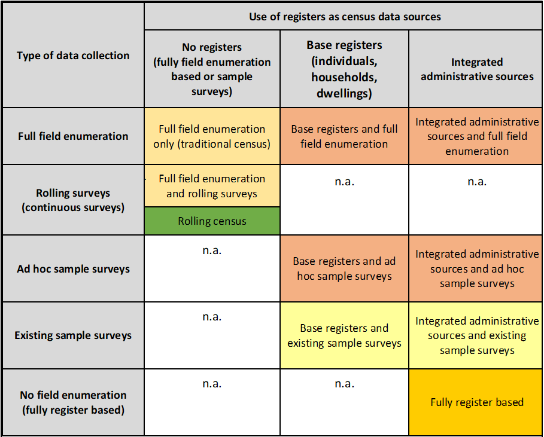
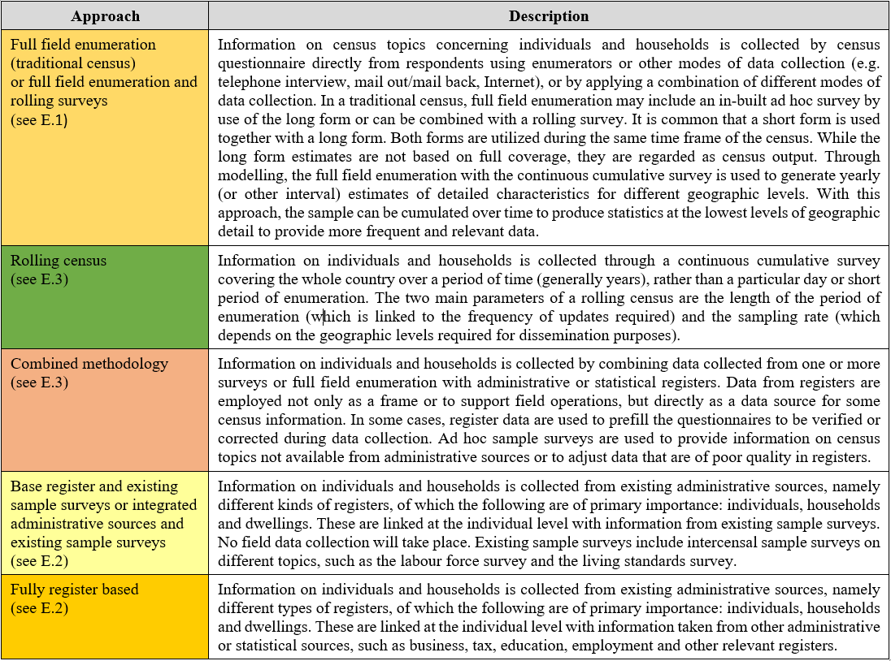

PART ONE. ESSENTIAL FEATURES AND CENSUS METHODOLOGY
I. Essential roles of the census
1.1. Evidence-based decision-making is a universally recognized paradigm of efficient management of economic and social affairs and of overall effective governing of societies today. Making use of relevant, accurate and timely statistics is essential to this model; producing detailed statistics for small areas and small population groups is its foundation. The role of the population and housing census is to produce and disseminate such detailed small-area statistics on population, its composition, characteristics, spatial distribution and organization into families and households. Censuses have been promoted internationally since the end of the nineteenth century, when the International Statistical Congress recommended that all countries in the world conduct them1. Since 1958, the United Nations has also been actively promoting the population and housing census by compiling the principles and recommendations for population and housing censuses and launching regular decennial worldwide programmes on population and housing censuses. In fact, the majority of the countries in the world conduct a population and housing census periodically. In order to increase the relevance of the data produced by censuses, several countries are now moving towards using alternative census methodologies to produce census-like statistics with a more frequent periodicity than the traditional decennial or quinquennial one.
1.2. While the roles of the population and housing census are many and will be elaborated in detail throughout the present revision of Principles and Recommendations for Population and Housing Censuses, several of the essential roles are listed below:
(a) The population and housing census plays an essential role in public administration. The results of a census are used as a critical reference to ensure equity in distribution of wealth, government services and representation nationwide by informing the distribution and allocation of government funds among various regions and districts for education, health services, delineating electoral districts at the national and local levels, and measuring the impact of industrial development, to name a few. Establishing a public consensus on priorities would be almost impossible to achieve if it were not built on census counts. A wide range of other users, including the corporate sector, academia, civil society and individuals, make use of census outputs.
(b) The census also plays an essential role in all elements of the national statistical system, including the economic and social components. Census statistics are used as benchmarks for statistical compilation or as a sampling frame for sample surveys. Today, the national statistical system of almost every country relies on sample surveys for efficient and reliable data collection, notwithstanding the increasing availability of non-traditional data sources. Without the sampling frame and population benchmarks derived from the population and housing census, the national statistical system would face difficulties in providing reliable official statistics for use by the government and the general public. For many countries with less developed statistical systems, a census is also an essential source providing data to integrate with survey data for producing model-based small-area estimations.
(c) A basic function of a census is to generate statistics on small areas and small population groups. While statistics on small areas are useful per se, they are important because they can be used to produce statistics on any geographic unit with arbitrary boundaries. For example, in planning the location of a school, it is necessary to have the data on the distribution of school-age children by school area, which may not necessarily correspond to the administrative area units. Similarly, small-area data from the census can be combined to approximate natural regions (for example, water catchments or vegetation zones) that do not follow administrative boundaries. Since census data can be tabulated for any geographic unit, it is possible to provide the required statistics in a remarkably flexible manner. This versatile feature of the census is also invaluable for use in the private sector for applications such as business planning and market analyses.
(d) Census data are used as a benchmark for research and analysis. They are used to study population dynamics. Population projections are one of the most important analytical outputs based on census data; future population projections are crucial for all segments of the public and private sectors.
1.3. It is critically important to produce detailed statistics for small areas and small population groups as a building block for efficient governance at all levels. For many countries the method for assembling this building block will be by conducting a population and housing census through universal and simultaneous individual enumeration of each set of living quarters and of each individual within the country’s boundaries. Some countries will adopt alternative approaches; yet, all of these methods should produce detailed, timely statistics for small areas and small population groups at a well-defined point or period in time.1.3. It is critically important to produce detailed statistics for small areas and small population groups as a building block for efficient governance at all levels. For many countries the method for assembling this building block will be by conducting a population and housing census through universal and simultaneous individual enumeration of each set of living quarters and of each individual within the country’s boundaries. Some countries will adopt alternative approaches; yet, all of these methods should produce detailed, timely statistics for small areas and small population groups at a well-defined point or period in time.
II. Definitions and key features
A. Definitions
- 1. Population census
-
1.4. A population census is the total process of planning, collecting, compiling, evaluating, disseminating and analysing demographic, economic and social data at the smallest geographic level pertaining, at a specified time, to all persons in a country or in a well-delimited part of a country.
1.5. Population is basic to the production and distribution of material wealth. In order to plan for, and implement, economic and social development, administrative activity or scientific research, it is necessary to have reliable and detailed data on the size, distribution and composition of population. The population census is a primary source of these basic benchmark statistics, covering not only the settled population but also homeless persons and nomadic groups. Data from population censuses should allow presentation and analysis of statistics on persons and households and for a wide variety of geographic units, ranging from the country as a whole to individual small localities or city blocks.
- 2. Housing census
-
1.6. A housing census is the total process of planning, collecting, compiling, evaluating, disseminating and analysing statistical data relating to the number and condition of housing units and facilities as available to the households pertaining, at a specified time, to all living quarters2 and occupants thereof in a country or in a well-delimited part of a country.
1.7. The census must provide information on the supply of housing units together with information on the structural characteristics and facilities that have a bearing upon the maintenance of privacy and health and living conditions. Sufficient demographic, social and economic data concerning the occupants must be collected to furnish a description of housing conditions and also to provide basic data for analysing the causes of housing deficiencies and for studying possibilities for remedial action. In this connection, data obtained as part of the population census, including data on homeless persons3, are often used in the presentation and analysis of the results of the housing census, if both operations are conducted together or there is a link between them.
B. Key features
1.8. The key features of population and housing censuses are individual enumeration, universality within a defined territory, simultaneity, defined periodicity and small-area statistics.
- 1. Individual enumeration
-
1.9. The term “census” implies that each individual and each set of living quarters is enumerated separately and that the characteristics thereof are separately recorded. Only by this procedure can the data on the various characteristics be cross-classified. The requirement of individual enumeration can be met by the collection of information in the field, by the use of information contained in an appropriate administrative register or set of registers, or by a combination of these methods.
- 2. Universality within a defined territory
-
1.10. The census should cover a precisely defined territory (for example, the entire country or a well-delimited part of it). The population census should include every person present and/or residing within its scope, depending upon the type of population count required, and should include them only once. The housing census should include every set of living quarters irrespective of type, and should include each one only once. This does not preclude the use of sampling techniques for obtaining data on specified characteristics, provided that the sample design is consistent with the size of the areas for which the data are to be tabulated and the degree of detail in the cross-tabulations to be made.
- 3. Simultaneity
-
1.11. Each person and each set of living quarters should be enumerated as of the same well-defined point in time and the data collected should refer to a well-defined reference period. The time reference period need not, however, be identical for all of the data collected. For most of the data, it will be the day of the census; in some instances, it may be a period prior to the census4. Not all census methodologies satisfy this criterion5.
Comments FWN: This part needs to start with a sentence explaining why we care about either simultaneity or at least approximately comparable reference periods. That way we can account for the variation among census methodologies, saying ok they might not all refer to exactly the same point but the need for them to refer to a reasonably similar point in time remains irrespective of methodology.
- 4. Defined periodicity
-
1.12. Censuses should, ideally, be taken at regular intervals so that comparable information is made available in a fixed sequence. A series of censuses makes it possible to appraise the past, accurately describe the present and estimate the future. It is recommended that a national census be taken at least every 10 years. Some countries may find it necessary to carry out censuses more frequently because of the rapidity of major changes in their population and/or its housing circumstances.
1.13. The census data of any country are of greater value nationally, regionally and internationally if they can be compared with the results of censuses of other countries that were taken at approximately the same time. Therefore, countries should make all efforts to undertake a census in years ending in “0” or at a time as near to those years as possible6 . It is obvious, however, that legal, administrative, financial and other considerations often make it inadvisable for a country to adhere to a standard international pattern in the timing of its censuses. Some regional groupings of countries, such as the European Union, have their own requirements regulating the dates of censuses among their members. In fixing a census date, therefore, such national and regional factors could be given greater weight than the desirability of international simultaneity.
- 5. Capacity to produce small-area statistics
-
1.14. The census should produce data on the number and characteristics of the population and housing units down to the lowest appropriate geographic level, compatible with national circumstances, and for small population groups, awhile protecting confidentiality of personal information on each individual. Not all census methodologies satisfy this criterion7.
III. Uses of population and housing censuses
1.15. Population and housing censuses are a principal means of collecting basic population and housing statistics. They form the core of an integrated programme of data collection and compilation aimed at providing a comprehensive source of statistical information for economic and social development planning, administration, assessing conditions in human settlements, research and commercial and other uses. Population and housing censuses are often a basis for sample surveys and provide insights into buildings, household and population characteristics as well as increasingly being used as a source of environmental statistics.
1.16. The value of population and housing censuses is increased if the results can be employed together with other data sources, as in the use of the census data as a basis or benchmark for current statistics, and if it can furnish the information needed for conducting other statistical data collection. It can, for example, provide a statistical frame for other censuses or sample surveys. The population census is also important in developing the population estimates needed to calculate vital rates in combination with civil registration data (see paragraphs 1.57–1.59). In addition, these censuses are a major source of data used in official compilations of social indicators, particularly on topics that usually change slowly over time. It is important, therefore, to take into account the requirements of a continuous, coordinated programme of data collection and compilation when planning a census. When the relationships between the population census, the housing census and other statistical investigations are considered from the outset, their shared purposes can best be served and their benefits best harnessed. The use of consistent concepts and definitions throughout an integrated programme of data collection and compilation is essential if the advantages of these relationships are to be fully realized. Of course, census-type information can also be derived from population registers and can also be estimated from sample surveys without undertaking a complete enumeration. These alternative data sources are presented under “Census methodology” in paragraphs 1.63–1.119.
1.17. Indicators are required by countries to track the progress towards the Sustainable Developmental Goals and as such efforts must be made by census offices to produce relevant indicators to meet this need.
1.18. Increasingly, Censuses of Population and Housing are a key source of data in the compilation of environment statistics. They provide environmental agencies with a range of information to analyze energy consumption, identify conservation opportunities, and forecast energy needs. Census data help national and local government and relief agencies in planning relief operations to assist populations and areas affected by natural disasters such as floods, hurricanes, tornadoes, and earthquakes. It also provides a rich source of data for public health authorities in identifying prevalence levels of disease, responses to pandemics and measurement of outcomes of public health initiatives.
1.19. A population and housing census also serves as the logical starting point for work on the organization and construction of computerized statistical products to serve continuing national and local needs for data in the intercensal period8.
1.20. In addition to the statistical value obtained directly from the census results themselves, there are further, indirect benefits from taking a census, particularly to the organization responsible for the census, or the national statistical office. These benefits include:
(i) Improved skills and experience: varied sets of skills are often required for administering a census that are not necessarily prominent in other parts of the organization, such as project management, procurement and commercial, communication, human resources, and information technology (IT) skills.
(ii) Technological advancement: often a census requires new technology to support complex data collection and processing requirements. These developments may be reused for other exercises within the national statistical office or lead to new technological developments.
(iii) New methods: the development of methods for enumerating the whole population, or statistical methods (such as edit and imputation) developed for processing census results, can often be reused for other statistical exercises within the national statistical office such as stratification of the population, estimation and modelling population characteristics, or the development of indicators.
(iv) Halo effect: the extensive promotion of the census may also have a positive effect, the “halo effect”, on other surveys, resulting in increases in response rates9.
A. Uses of population censuses
- 1. Uses for policymaking, planning and administrative purposes
-
1.21. The fundamental purpose of the population census is to provide the facts essential to national policymaking, planning and administration. Information on the size, distribution and characteristics of a country’s population is essential for describing and assessing its economic, social and demographic circumstances and for developing sound policies and programmes aimed at fostering the welfare of a country and its population. The population census, by providing comparable basic statistics for a country as a whole and for each administrative unit, locality and small area therein, can make an important contribution to the overall planning process and the management of national affairs. Counts of the population overall, or of subgroups within the population, by geographic region are often used for the distribution of government funding, development programmes and services. Population censuses in many countries represent the very foundation of their national statistical systems, with census data providing important baseline data for policy development and planning, for managing and evaluating programme activities across a broad range of sectoral applications, and for monitoring overall development progress. The population census is used by international and regional organizations. An emerging use for census data is the assessment of good governance by civil society groups and measuring the achievement of sustainable Development Goals. The performance of a democratically elected government in improving the welfare of its citizens can be monitored from one census to the other by ordinary citizens through the widespread and timely dissemination of census results.
1.22. Population censuses serve many programme needs by providing statistical information on demographic, human settlement, social and economic issues for local, national, regional and international purposes. For example, population censuses provide basic information for the preparation of population estimates or projections and detailed demographic and socioeconomic analysis of the population. The census can be used to update intercensal population estimates and population projections as well as provide data for the calculation of demographic and social indicators, particularly those that may be observed infrequently because they measure phenomena that change slowly over time, and those that are needed for small areas or small population groups.
1.23. In humanitarian settings, comprehensive and sound census outputs can be used to support the identification of crisis affected populations and specifically vulnerable groups.
- 2. Uses for research purposes
-
1.24. In addition to serving specific governmental policy purposes, the population census provides indispensable data for the scientific analysis and appraisal of the composition, distribution and past and prospective growth of the population. The changing patterns of urban–rural concentration, the development of urbanized areas, the geographic distribution of the population according to such variables as occupation and education, the changes in the sex and age structure of the population, and the mortality , fertility and net emigration differentials for various population groups, as well as the economic and social characteristics of the population and the labour force, are questions of scientific interest that are of importance both to research and for solving practical problems of industrial and commercial growth and population dynamics management.
- 3. Uses for business, industry and labour
-
1.25. In addition to those uses given above, the census has many important uses for individuals and institutions in business, industry and labour. Reliable estimates of consumer demand for an ever-expanding variety of goods and services depend on accurate information on the size of the population in subnational areas and its distribution at least by sex and age, since these characteristics heavily influence the demand for housing, transport, furnishings, food, clothing, recreational facilities, medical supplies and so forth. Furthermore, the census can be used to generate statistics on the size and characteristics of the supply and demand of labour needed for the production and distribution of such commodities and services in conformity with International Labour Organization statistical standards10. Such statistics on the local availability of labour may be important in determining the location and organization of enterprises.
- 4. Uses for boundary delimitation
-
1.26. One of the basic administrative uses of census data is to support political and administrative mapping. Detailed information on the geographic distribution of the population is indispensable for this purpose. Certain aspects of the legal or administrative status of territorial divisions may also depend on the size and characteristics of their populations, for example, whether a previously rural area is now to be declared as urban.
1.27. A compelling use of census data is in the redrawing of electoral constituency boundaries in most countries. This is often enshrined in the country’s constitution and provides a legal basis for census taking. The current distribution of a country’s population is thereby used to assign the number of elected officials who will represent people in the country’s legislature.
- 5. Use as a sampling frame for surveys
-
1.28. For countries without comprehensive population registers, population censuses serves as a foundation for construction of a sampling frame for surveys during the intercensal years on many topics, such as the labour force, poverty, fertility, mortality, disability and international migration.
1.29. Censuses provide an area frame that contains hierarchical geographical areas from the largest area (at the national level) to the smallest geographic division, usually called enumeration areas (EAs) and a list frame that contains the list of households located within each EA. For countries with resources address-based sampling frames have been gaining popularity given their efficiency and quality. The addresses are updated regularly and important auxiliary variables are available on the frame to help improve sampling efficiency. For countries that do not have the resources or capacity to maintain a comprehensive list of addresses, a master sample frame is often used. With a master sample frame, the address list is updated only for selected enumeration areas.
1.30. It is important to give careful consideration to the construction of a census for subsequent use as a survey sample frame when the census is in the planning stage. The census frame should be complete in coverage. This means, for example, that care must be taken to ensure that the entire country is divided into enumeration areas without any omissions or overlaps, i.e. all land area belongs to one and only one enumeration area. The coverage of population within the enumeration areas should be complete, regardless whether they reside in private households or not.
1.31. Population and household counts for the enumeration areas, taken from the census, are also a highly useful ingredient for post-census sample survey design planning. This information is often used to establish measures of size for the selection of first- or second-stage sampling units, or to help in various stratification schemes. Characteristics of living quarters, the households and individuals collected in the census are also useful as stratification variables to support efficient sampling design for surveys. For example, these may include the degree of urbanization, age, sex, education attainment, labour force status, type of living quarter, as well as other characteristics that may be used to support design of specialized surveys targeting rare and/or difficult-to-reach populations such as international migrants, persons with disabilities, indigenous population, etc.
1.32. Efforts should be made to ensure census records are geospatially enabled, i.e., geocoded to a specific location – this can facilitate selecting samples for household surveys as well as data integration.
1.33. Many countries use telephones to follow up with respondents to address missing values and nonresponse11. For countries without a good telephone frame for phone surveys, phone numbers collected during censuses can be used for subsequent surveys. However, this requires the following of strict protocols and consent from respondents.
- 6. Use in humanitarian settings
-
1.34. Census data can be used in humanitarian settings in a number of ways, including:
To assess the needs of the population: Census data can be used to identify the number and location of people who have been affected by a humanitarian crisis. This information can be used to plan and deliver relief and recovery efforts. For example, census data can be used to identify the number of people who need food, water, shelter, and medical assistance.
To target assistance to the most vulnerable: Census data can be used to identify the most vulnerable populations in a humanitarian setting. This information can be used to target assistance to those who need it most. For example, census data can be used to identify women, children, and the elderly.
To monitor the impact of humanitarian interventions: Census data can be used to monitor the impact of humanitarian interventions. This information can be used to improve the effectiveness of interventions and to ensure that they are reaching those who need them most. For example, census data can be used to track the number of people who have received food assistance, the number of children who have been vaccinated, and the number of people who have been able to return to their homes.
1.35. In addition to these general uses, census data can also be used to address specific humanitarian challenges. For example, census data can be used to:
Track the spread of disease: Census data can be used to track the spread of disease in a humanitarian setting. This information can be used to prevent the spread of disease and to target public health interventions.
Identify and protect vulnerable groups: Census data can be used to identify and protect vulnerable groups in a humanitarian setting. This information can be used to prevent violence and exploitation. For example, census data can be used to identify refugee camps and other areas where vulnerable people are concentrated.
Plan for long-term recovery: Census data can be used to plan for long-term recovery from a humanitarian crisis. This information can be used to rebuild infrastructure and to support economic development. For example, census data can be used to identify areas where new schools and hospitals are needed.
1.36. Census data is an essential tool for humanitarian organizations. By providing accurate and timely information on the population, census data can help humanitarian organizations to save lives and to build a better future for people affected by crisis.
- 7. Use for monitoring internationally agreed development goals
-
1.37. Census data is essential for monitoring international development goals. The Sustainable Development Goals (SDGs), adopted by all United Nations Member States in 2015, provide a blueprint for a better and more sustainable future for all. They address the global challenges we face, including poverty, inequality, climate change, environmental degradation, peace and justice. Census data can be used to track progress towards the SDGs in a number of ways, including:
Measuring progress towards SDG indicators: Census data can be used to measure progress towards many of the SDG indicators. For example, census data can be used to measure SDG 1 on poverty, SDG 3 on health, and SDG 4 on education.
Identifying disparities: Census data can be used to identify disparities in progress towards the SDGs. For example, census data can be used to identify disparities in access to education and healthcare between different groups of people, such as women and men, rural and urban populations, and different ethnic groups.
Monitoring the impact of interventions: Census data can be used to monitor the impact of interventions designed to achieve the SDGs. For example, census data can be used to monitor the impact of a program to reduce poverty or improve educational attainment.
1.38. Census data is a valuable tool for monitoring progress towards the SDGs. By providing accurate and timely information on the population, census data can help to ensure that no one is left behind.
- 8. Use for population estimates and projections
-
1.39. Census data are essential for making population estimates and projections. Census data are used to make population estimates by adjusting the most recent census population counts for births, deaths, and migration. Census data are also used to make population projections by using a variety of demographic models that take into account factors such as fertility, mortality, and migration.
1.40. It is important to note that population estimates and projections are not perfect. They are based on assumptions about future trends in fertility, mortality, and migration. These assumptions can change, which can lead to inaccurate estimates and projections. However, population estimates and projections are still the best tool that we have for understanding the future of our population. and regular re-basing of them using a population census helps to limit inaccuracies.
B. Uses of housing censuses
- 1. Uses for development of benchmark housing statistics
-
1.41. The housing census produces benchmark statistics on the current housing situation and is vital for developing national housing and human settlements programmes. The housing census is also valuable for providing the sampling frame for special housing and related surveys during the intercensal years.
1.42. Housing benchmark statistics are also critical for emergency planning for response to natural hazards (such as destructive storms, earthquakes, tsunami and fires), or post-conflict situations. Following such situations, these statistics can be used to estimate the numbers of people and structures affected, the need for emergency response and reconstruction requirements.
1.43. National statistical authorities would need to develop, from housing censuses, the sort of benchmark statistics in housing that could be supplemented by current building and construction statistics and would provide continuous up-to-date information of the housing position needed for the consideration of housing programmes. Since not all the basic information required to assess housing needs or to formulate housing programmes can be obtained through a housing census, additional data must be obtained through the population census, special housing surveys and environmental surveys, and from vital statistics, economic statistics and so forth; but data obtained from the housing census will constitute the basic framework within which the estimates are made, indices computed and further statistical enquiries planned.
1.44. When population and housing censuses are carried out as a single operation or independently but in a well-coordinated fashion, the combined information provided is of much higher value than when conducted in isolation, since the essential features of both censuses are interrelated. The information on housing may be analyzed in association with the demographic and socioeconomic conditions of the occupants and vice versa.
- 2. Uses for the formulation of housing policy and programmes
-
1.45. The formulation of housing policies and programmes is one of the principal uses of housing census data. Housing policy is often influenced by social and economic as well as political considerations, and available factual data concerning the housing situation provide an objective basis on which policymakers can take their decisions.
1.46. In most countries, housing programmes encompass both governmental and private activity. The data derived from a housing census are used by governmental authorities for making an analysis or diagnosis of the housing situation. Housing conditions are analysed in quantitative and qualitative terms and data from previous censuses are used to indicate the changes in the housing situation that have occurred during the intercensal periods; the housing stock and future housing requirements are estimated and compared with the rates of dwelling production being attained; and the characteristics of the households in need of housing are considered in relation to the availability and cost of housing. As part of overall development plans, such an analysis is necessary for the formulation of national housing programmes and for their execution.
1.47. Commercial users also study housing census data. Those engaged in the construction industry, financing institutions, and manufacturers of housing fixtures and equipment and household appliances use housing census data, in combination with population census data, to assess the possible demand for these goods.
- 3. Assessment of the quality of housing
-
1.48. The materials used for the construction of housing units (roof, walls, floors) are a significant indication of the quality of life experienced by the occupants and, viewed in aggregate across multiple dwellings in an area and alongside other information such as weather conditions and date of construction, can provide an indicator of disaster risk. Trends indicated by census data in the type of housing materials used can show improvements in the welfare of the citizenry, such as where the percentage of poor-quality or slum-like housing facilities has decreased. Additionally, measures of water, sanitation and hygiene (WASH), as well as energy usage and telecommunication data are valuable for the planning and development of future infrastructure needs.
C. Relationship between the population census and the housing census
1.49. There is an especially close association between population censuses and housing censuses. The two censuses may constitute one statistical operation or they may be two separate but well-coordinated activities, but in either case they should never be considered completely independently of each other because essential elements of each census are common to both. For example, an essential feature of a population census is the identification of each occupied set of living quarters and of the persons living therein, and an essential feature of a housing census is the collection of information on the characteristics of each set of living quarters in association with the number and characteristics of its occupants.
1.50. In many countries, the population and housing censuses are taken concurrently, often with the use of a single schedule. In this way, the information on population and living quarters can be more readily matched, processing is facilitated and extensive analysis can be carried out. This also makes it possible to relate the information on demographic and economic characteristics of each household member that is routinely collected in the population census to the housing census data.
1.51. In censuses that are conducted with direct enumeration, the advantages of simultaneous investigation may be offset to some extent by the additional burden on the respondent and the enumerator resulting from the increased amount of information that must be collected at one time. In countries where this is likely to be a serious problem, consideration might be given to collecting data for a limited number of topics on the basis of a complete enumeration in the population and housing census, with more complex data in both fields being collected on a sample basis only, either concurrently with or immediately following the full enumeration. Alternatively, consideration might be given to carrying out the housing census as part of the advance household listing operations of the population census.
1.52. The relationship between the population census and the housing census will affect the means by which data on homeless persons are obtained. In the case of simultaneous censuses of population and housing, data on homeless persons will be obtained as part of the population census. Where the housing census is carried out independently of the population census, it may be necessary to assign resources to enumerate homeless persons in the housing census. Information collected from enumerating homeless persons may reflect, among other things, the magnitude of the housing problem in a given locality.
D. Relationship of population and housing censuses to intercensal sample surveys
1.53. The rapidity of current changes in the size and other characteristics of populations, and the demand for additional detailed data on social and economic characteristics of population and housing characteristics that are not appropriate for collection in a full-scale census, have brought about the need for continuing programmes of intercensal household sampling surveys to collect current and detailed information on many topics12.
1.54. The population and housing census can provide the frame for scientific sample design in connection with such surveys (see paragraphs 1.25–1.29); at the same time, it provides benchmark data for evaluating the reasonableness of the overall survey results as well as a base against which changes in the characteristics investigated in both enquiries can be measured. To allow for the comparison of census and survey results, the definitions and classifications employed should be either identical or harmonized, while remaining consistent with the aims of each investigation. Because of the relative permanence of living quarters, the lists available from the housing census (with suitable updating) may also provide a convenient frame for carrying out enquiries dealing with topics other than population and housing.
E. Relationship of population and/or housing censuses to other types of censuses and other statistical investigations
- 1. Census of agriculture
-
1.55. While the population and housing censuses have a close relationship, their relationship with the agricultural census is less well defined. However, as the result of increasing integration within programmes of data collection, the relationship between the population and housing census and the agricultural census is now far closer than in the past and countries are increasingly looking at new ways to strengthen this relationship.
1.56. One conceptual issue in relating the two censuses is that they use different units of enumeration. The unit of enumeration in the agricultural census is the agricultural holding13, which is the economic unit of agricultural production, while the units of enumeration in the population census are the household and the individual within the household. In many developing countries, however, there is usually a one-to-one relationship between households with own-account agricultural production14 and agricultural holdings. In these cases the same unit is enumerated in both types of censuses. For countries where most agricultural production activities are carried out by households (that is, in the household sector), establishing links between the two censuses is particularly relevant.
1.57. The agricultural census collects various household or individual data for members of the agricultural holder’s household. The World Programme for the Census of Agriculture 201015 recommends the collection of data on household size and limited data on demographic characteristics and economic activity of members of the agricultural holder’s household, as well as some optional data on farm labour, such as persons working as employees on the holding. Users may find some agricultural activity data from the agricultural census more comprehensive than from the population census because the latter normally investigates the main work activity of each person during a short time reference period and this may not identify persons connected with agricultural activity on a seasonal basis or as a secondary activity. On the other hand, the population census provides data on all persons working in agriculture, including as paid employees. Such information is not available from the agricultural census, which only covers households with own-account agricultural production. To get a complete picture, agricultural data users will need both agricultural census data and population census data.
1.58. In planning the population and housing census, every opportunity for developing the relationship between this census and the agricultural census should be explored. This can take several forms. Definitions used in the population and housing censuses should be compatible with those used in the agricultural census so that meaningful comparisons can be made between the two data sets. The population and housing census can also be of use in the preparation of the agricultural census, such as in the demarcation of enumeration areas, the preparation of the frame for the agricultural census or, if applicable, the sample design.
1.59. In planning the national census programme, serious consideration should be given to the possibility of collecting key agricultural information as part of the population and housing census exercise that would facilitate the preparation of the frame of agricultural holdings in the household sector for a subsequent agricultural census. This could be done as part of the pre-census cartographic work and/or listing exercise or by adding a few questions to the census questionnaire (as elaborated in paragraphs 4.387–4.396). In the latter case, additional items at the household level could be included to identify whether any member of the household is engaged in own-account agricultural production activities. It may also be useful to collect additional data at the individual person level to identify persons involved in agricultural production activities during a longer period, such as a year. Information on occupation or industry and status in employment, and participation in own-use production of agricultural goods where relevant, could together facilitate identification of households with own-account agricultural production. Where countries choose to adopt this approach of using the population and housing census to establish a frame for the agricultural census, the agricultural census should be synchronized with the population and housing census and conducted as soon as possible after the population and housing census, while the frame is still up to date. This approach is detailed in the Guidelines for Linking Population and Housing Censuses with Agricultural Censuses16.
1.60. Linking population and agricultural census data can bring many benefits. This could add considerable analytical value to data sets from both censuses and save on data collection costs. Many of the demographic and activity status data collected in the population census are also collected in the agricultural census. If data from the two censuses could be linked, it would no longer be necessary to collect these data again in the agricultural census, while still allowing for comprehensive cross-tabulations.
1.61. A few countries conduct the data collection for the population and agricultural censuses as a joint field operation. Normally, each census retains its separate identity and uses its own questionnaire, but field operations are synchronized so that the two data collections can be done at the same time by the same enumerators. Occasionally, the two censuses are merged into one. This may have a number of advantages; however, as this is an increasingly complex operation, its impact on field operations and data quality needs to be carefully considered.
- 2. Census of establishments
-
1.62. Although the collection of information on industrial and commercial establishments does not constitute a part of the population census, the information that is collected from employers and own-account workers regarding the economic units they operate, such as the kind of economic activity and the size of the unit, can be used for preparing listings of the proprietors of such establishments. The information can also be used to prepare listings of the establishments themselves, if information is requested on their location or when the establishments are located within the living quarters (or dwellings). Experience shows that these listings can be used in a subsequent census of establishments or for supplementing the registers of establishments maintained by most countries and utilized as a list-based or area-based sampling frame for their establishment surveys.
1.63. Many business registers cover only establishments with fixed visible premises in which more than some minimum of persons (usually 5 or 10) are employed. In these cases, the population census can be used to collect basic information (such as kind of activity and size) on those establishments with employment below this minimum number of persons, by identifying the self-employed persons that operate them. However, special care should be taken in the choice of the unit of enumeration to ensure that there is no double counting of establishments.
1.64. When the information from the population census is to be used to construct a list-based sample frame, it is essential that the information from the population census be available and used shortly after the enumeration is carried out because this information can quickly become outdated. This requirement is less imperative when the information is to be used to construct an area-based sample frame.
1.65. The population census information needed for these purposes is the status in employment, in order to identify employers and own-account workers. For this subset of workers, information needs to be collected on the number of establishments operated, and for each of these, the kind of economic activity, the name and address of the establishment (if any), the number of workers engaged (including contributing family workers and employees) and whether the establishment is operated in partnership with other persons. If all of this information appears in the census questionnaire, the number of small establishments can be extracted from the schedule or from the processing documents after the enumeration.
- 3. Census of buildings
-
1.66. In certain circumstances, it may be necessary, as part of the housing census operations, to enquire whether buildings (both residential and non-residential) are occupied. Thus, it may be convenient to record basic information for all buildings at the time of the housing census, even though detailed data may be collected only for those in which housing units or other sets of living quarters are located. The comprehensive list thus obtained sometimes provides the basis for a census of buildings, carried out concurrently with, or subsequent to, the housing census, or it may provide for the identification of special types of buildings significant for other enquiries, such as the census of establishments or the census of schools. If a listing of households is to be carried out before the actual enumeration, this would be most ideal for carrying out such an exercise.
- 4. System of current housing statistics
-
1.67. Current housing statistics refer to latest data and trends in the housing market. They reflect the number of dwellings constructed and certain related information such as value, number of rooms, floor space, and so forth, as well as number of dwellings destroyed or demolished. These data are usually obtained from a system of data collection based on the administrative procedures required in connection with activities in the housing market. For example, construction statistics may be derived from permits issued for the construction of dwellings, from records of dwelling starts or completions, or from certificates of occupancy. Statistics on dwellings destroyed may be obtained from the records maintained for the levying of rates and the collection of taxes. Compiled monthly or quarterly, current housing statistics reflect changes in the housing inventory and, although they may serve other purposes, they are also used to update the benchmark data obtained from housing censuses.
F. Relationship between the population census and/or housing census and administrative registers
- 1. Civil registration and vital statistics
-
1.68. Population censuses are a fundamental baseline for the Civil Registration and Vital Statistics (CRVS) systems. By comparing census records with CRVS records, gaps in registration can be identified. In addition, Census data can:
- help identify vulnerable populations, such as refugees, internally displaced persons, or marginalized communities, who may face challenges in accessing CRVS services;
- be used to estimate mortality rates (e.g., age-specific death rates) and fertility rates, which are essential components of vital statistics;
- be used as a benchmark for evaluating the performance of CRVS systems.
1.69. The United Nations Statistics Division (UNSD) in Handbook on Civil Registration and Vital statistics Systems define civil registration as “the continuous, permanent, compulsory, and universal recording of the occurrence and characteristics of vital events pertaining to the population, as provided through decree or regulation in accordance with the legal requirements in each country”. A well-functioning civil registration and vital statistics (CRVS) system helps ensure that every person has a legal identity, facilitating access to the public benefits and social protections and human rights. It also produces vital statistics on population health and serves as an optimal source of data on the prevalence, distribution, and cause-specific mortality for evidence-based decision policy, planning and programme implementation.
1.70. The 2030 sustainable development goal (SDG) agenda highlights the importance of CRVS system with many targets and indicators dependent on data from the CRVS system. Additionally, data from complete, reliable, and timely CRVS systems can provide cause-specific mortality to monitor many targets and indicators listed in the SDGs. Complete CRVS system can provide reliable population denominators which are often needed for measuring progress on any indicators that mention a population ratio, such as “per 1000 population”, “live births” or “per capita”.
1.71. Population census data can serve as denominators for the computation of vital rates, especially rates specific for characteristics normally investigated only at the time of the census. Conversely, census results, time-adjusted by vital and migration statistics, can provide estimates of the future size, distribution and other characteristics of the population of the total country and subnational areas. Furthermore, census data on fertility can provide a benchmark check on the reliability of current birth statistics, and vice versa. It is consequently desirable that procedures for the collection of population census data, vital statistics and migration statistics be closely coordinated with regard to coverage, concepts, definitions, classifications and tabulations.
1.72. Some countries have linked individ¬ual census returns for infants less than 1 year of age with birth registration reports for the year preceding the census date as a means of checking on the completeness of one or the other type of investigation. Linkage of death reports with census returns has been used to compare the information on characteristics of the deceased as reported in the two sources17. While the many problems posed in the past by the one-to-one matching of two types of records have not been entirely solved, their severity has been mitigated by developments in computer technology. Before undertaking either of the procedures, however, coun¬tries should consider carefully the possible advantages of using household sample survey returns rather than census returns in the operation. Moreover, such operations have to be carried out in complete accord with national laws and policies governing the confi¬dentiality of information obtained in the census if public confidence in the census is to be maintained.
1.73. In the establishment of a civil registration system, census results on the geographic distribution of the population can be useful for determining appropriate locations for registration offices.
- 2. Population register
-
1.74. The term “population register” was defined in 1969, in the publication entitled Methodology and Evaluation of Population Registers and Similar Systems (United Nations, 1969), as “an individualized data system, that is, a mechanism of continuous recording, and/or of coordinated linkage, of selected information pertaining to each member of the resident population of a country in such a way to provide the possibility of determining up-to-date information concerning the size and characteristics of that population at selected time intervals” (chap. I.A). Thus, the population register is the product of a continuous process, in which notifications of certain events, which may have been recorded originally in different administrative systems, are automatically linked to it on a current basis. The method and sources of updating should cover all changes so that the characteristics of individuals in the register remain current. Because of the nature of a population register, its organization, as well as its operation, should have a legal basis.
1.75. Basic characteristics that may be included in a population register are date and place of birth, sex, date and place of death, date of arrival/departure, citizenship(s) and marital status. Depending on the possibility of proper linking with other registers, much additional information may be added to the single record, such as language(s), ethnicity, educational attainment, parity, activity status and occupation. In order to be useful, any additional information must be kept up to date. If complete, population registers can produce data on both internal and international migration through the recording of changes of residence as well as the recording of international arrivals and departures.
1.76. There is no universally adopted definition for a population register. However, a population register may be taken to mean an administrative register primarily used in an administrative information system by public agencies for their own specific purposes such as establishing personal identification, voting, education and military service, social insurance and welfare, and for police and court reference.
1.77. A key requirement is that each unit in the Population register should be always uniquely identifiable. This is best achieved by using a system of identification codes (keys). Identification is however also possible without such a code being used, if sufficient information is available on the units (for persons: name, Address, date of birth, etc.).
- 3. Building/dwelling or address register
-
1.78. An address register is an up-to-date comprehensive list of all known physical addresses within a country. In order for it to be a key piece of statistical infrastructure that can be used for a census it should contain key pieces of information such as address text, address use, a latitude and longitude, dwelling structure for residential addresses and non-private dwelling information (i.e. hotels and caravan parks).
1.79. An address register can enable the running of a digital Census by providing a mail out frame which is a dataset of residential and non-private dwellings (such as hotels and caravan parks) and is used to support the mail out of census materials. The latitude and longitude and dwelling structure is particularly useful for helping to locate dwellings in remote areas.
1.80. An address register can be also be used to provide an administrative census by using common variables (i.e. address text) to link to other government data sources in order to add further value to the current information, for example, employment and income data. Utilities data could also be linked to an address register to help determine if a residential address is being actively lived in or whether it is only used at certain times across the year.
1.81. As there are certain fields (particularly in an administrative census) that exist as inputs from an administrative register and as outputs of the census it is important to ensure that the descriptions and concepts of these fields are harmonised to make it fit for purpose. For instance, non-private dwellings and dwelling structure both appear as an input from an address register but also as an output in a census, in order to ensure the outputs are accurate the definitions of the different non-private dwellings and dwelling structures need to be consistent across the address register and the census.
- 4. Business register
-
1.82. Statistical Business Registers (SBRs) provide the infrastructure to support the collection of high quality, reliable and consistent economic data and the production of economic statistics. SBRs are maintained by National Statistical Organisations and used for statistical purposes.
1.83. To ensure effective and complete coverage, SBRs must be regularly maintained and updated. Administrative data sources such as legal or taxation business registers including unique identifiers are used to update less significant units with simpler structures. Large, complex and significant businesses are updated through profiling activity to transform these businesses from administrative data to statistical units. Other sources of updates may include economic censuses, survey feedback, big data, web scraping or data mining.
1.84. SBRs provide a coherent set of statistical units and classifications to collect and assemble data. SBRs include units represented in the economic units model, which describes the characteristics of businesses and the structural relationships between related businesses. The types of units that may be part of SBRs include:
enterprise group - a set of enterprises grouped by financial or legal arrangements and controlled by a group head;
enterprise - units grouped by institutional sector;
legal entity - can differ widely between and within countries, these are units that own goods or assets, incur liabilities and can enter into contracts, with single or multiple legal entities forming an enterprise;
kind-of-activity unit - units grouped by a single principle productive activity;
establishment - single locations with one principal productive activity.
1.85. SBRs are used to create regular point-in-time frames (frozen or common frames) from which survey or sampling frames (subsets) for most economic surveys are drawn, ultimately feeding into the System of National Accounts. SBRs are also used to analyse and publish business demography statistics. Business demography includes events such as creation and cessation of units, survival information, and changes in business characteristics over time including type of activity, size measures (employment, turnover), location, institutional sector, employing versus non-employing units.
- 5. Other administrative data sets
-
1.86. Other admin data include such as records of foreigners and foreign workers, people living in institutional places, enrolment and graduation records, social insurance, employment records, etc. The availability and use of these sources is very country specific, available in some, not in others.
1.87. There is an increasing availability of a range of government and private data sets containing information on the persons or the households within a country. The utility of these data sets for statistical analysis may be limited, in some countries, by their lack of population coverage, data accuracy or range of characteristics, especially in the case of newly-developed sources and those designed for purposes in which completeness and accuracy are not key quality criteria. The linkage of these data sets with the census file, with its complete coverage of the persons and households, can provide the ability to create new insights and new statistical products to leverage more value from the census.
1.88. Administrative data may replace data obtained by direct enumeration – for example, in some countries income data from the taxation or revenue department can replace the need to directly collect those data in the census. Administrative data can also extend census data – for example, census data can be linked with visa information or health information to extend the census data set into areas that may be too sensitive to collect on the census form, or with past education data to analyse longitudinally the impact of education on labour force outcomes. Administrative data can also replace missing data – for example, in one country health records have been used to impute the count and characteristics of usual residents who were non-responding during the census enumeration period.
1.89. As described above in paragraph 1.58, linkage operations should be undertaken with caution, ensuring not only that all national laws are met but also that the trust of the public in the census and the statistical systems is maintained.
G. Integration of census data with other data sources
1.90. Data integration is the process of combining data from two or more sources at the unit level (for example, persons, dwellings, businesses) or at the aggregated level. Data integration has the potential to improve cost-effectiveness and relevance of any single data collection activity. It also has the potential to enhance the coverage, timeliness and the richness of available data, allowing more complex questions to be analysed and more insights to be drawn than would be possible from a single source. Many integrated data assets are also longitudinal in nature, meaning they allow changes and patterns in population, economy and environment to be better understood over time.
1.91. Integrating data can also serve to reduce respondent burden by reducing the number of questions that need to be asked in censuses or surveys as shown in some countries when data from administrative sources are used with proper consent from respondents. Censuses are often used as a spine18 for linking population data from multiple sources.
1.92. Data integration at unit level is made possible with the use of key linking variables. In the case of people, this may be unique identifiers available from both data sources; or names, sex, addresses, date of birth etc., if unique identifiers are not available for the linkage.
1.93. Data integration at the aggregated level required is carried out through modelling, for two different sources borrowing strength from each other. One example is the small area estimation that has been traditionally used for poverty mapping for lower geographical areas but has now been extended to cover a wide variety of outcome indicators including employment and social welfare. The method is also being used by countries to produce estimates for hard-to-reach population groups such as persons with disability.
1.94. For countries that do not have access to good administrative data, population censuses have been an important source to be integrated with household surveys, for two reasons. First, population censuses tend to be more comprehensive in coverage compared to household surveys. Second, population censuses collect a number of variables that can be used as auxiliary variables for the data integration. On the other hand, household surveys collected a lot of more in-depth information with limitations on coverage. Combining the two sources can produce data that are more granular and timelier.
1.95. Successful integration of census with other data sources requires careful planning and designing of the census data collection, so it is “interoperable” by design. This might include, for example, using the same concepts and definitions for key socio-demographic variables across data sources. Georeferencing censuses is another important element to ensure that census data can be integrated with other sources through geospatial information.
1.96. Geospatial information (e.g. address, x- and y-coordinates, or a geographical name) can play an important role in bringing together information from various domains by enabling integration of datasets from different sources using the location information as a matching key variable (e.g. integrating administrative data with survey data using address or postal code that exists in both datasets). To ensure the quality of the integration, standardising the geospatial information in the different datasets is critical. This standardisation would normally take place before the integration of datasets and can be done through, for example, matching location information in the datasets with a centralised standard system (e.g. address matching, geocoding) which should be part of the national spatial data infrastructure. This linkage, ideally done through consistent, unambiguous and persistent identifiers (PIDs), can also allow the dataset to use various additional geospatial information within the address registry or geocode database. In the absence of such a system, organisations may rely on other ways to reference location (e.g. GPS coordinates), alternative sources (e.g. address registry from utility provider) or higher-level geography (e.g. large geographical area).
IV. Census methodology
1.1. There are different methods of data collection, including traditional collection directly from the public in a field census, or the use of data sources based on administrative records or methods mixing administrative records with data collected from the field.
1.2. Summarizing the experiences of the previous population and housing census round19, it became evident that a number of countries were exploring the use of alternative methodologies with respect to the conventional, field-enumeration based census for producing census statistics. The use of registers – primarily population registers – in combination with other sources is being considered in a number of countries for the purpose of producing detailed small-area statistics on population and housing, as well as the application of continuous survey methodology for the same purpose. Furthermore, these alternatives to the traditional method of conducting population and housing censuses are becoming more diverse in terms of developing combinations of various data collection methods (see paragraph 1.95), and it is thus a challenge to summarize and categorize them using generally accepted data source methodologies.
1.3. It should be noted that most countries are expected to continue using the traditional census approach – soliciting information from each household in a country – in the 2020 round of censuses20, while at the same time it is anticipated that increasing numbers of countries will intend to use alternative methodologies. There are quite a few reasons for exploring alternative approaches, and the following presents a sample:
(a) the need to produce more frequent and timely statistics;
(b) budgetary limitations for census taking;
(c) reluctance of the population to participate in the census;
(d) increased technical capacities to manipulate data sources; and,
(e) utilizing data available on more variables from multiple sources.
1.4. This section aims to briefly elaborate on possible methodologies for conducting censuses based on the recent experiences of countries. The section also describes the necessary conditions for using a specific methodology, its advantages and disadvantages, and its implications for the content and administration of the census. It should be kept in mind that countries using a specific census methodology might have significant differences in implementation of the methodology, arising from differing country conditions and expectations. Regardless of the approach, the crucial principle of providing detailed statistics at the lowest geographic level remains of paramount importance.
1.5. The various census methodologies are represented in a matrix in Table 121 , 22, where the rows describe data collection through field enumeration and the columns represent use of administrative or population registers as census data sources. The matrix presents only those options that either have been used or are likely to be used by countries and does not present all possible combinations, including theoretical ones that have yet to be tested by any country.
1.6. The different approaches are explained in Table 223. First, the full field enumeration and the register-based census are presented; then the combined methodologies are described. Alternative approaches have been adopted in different ways by different countries, depending on national preferences and practices and the availability of appropriate data sources.
1.7. The columns in the matrix present different types of registers: administrative registers, statistical registers and base registers. Administrative registers are registers that are created and used mainly for administrative purposes outside the national statistical authorities. An administrative register will be edited, corrected and perhaps imputed into a statistical register inside a statistical institute and can then be used for statistical purposes. A statistical register can also be established inside a statistical institute for statistical purposes; one example could be a register of occupations that in many cases does not have any administrative purposes. Base registers are registers, such as the population register, dwelling register or enterprise register, that create a population base for individuals, dwellings and enterprises. Other registers will then be matched with a base register. The household register will be created by combining the population and dwelling registers.


A. Full field enumeration (traditional census)
1.8. The full field enumeration or traditional approach comprises a complex operation of actively collecting information from individuals and households on a range of topics at a specified time, accompanied by the compilation, evaluation, analysis and dissemination of demographic, economic and social data pertaining to a country or a well-delimited part of the country. Members of the public respond to a census questionnaire, or interviewers are deployed to collect information from respondents. For interviewer-based censuses, enumerators assigned to different enumeration areas cover all households and persons in the enumeration area during a specified and usually short period of time in order to meet the requirements of universality and simultaneity.
1.9. Various methods can be used for collecting the data, including a mailed or dropped-off questionnaire, the telephone, the Internet, personal visit follow-up, or a combination of such methods, countries employing the traditional design may utilize very different collection approaches in doing so.
1.10. The traditional census has merit in providing a snapshot of the entire population at a specified period and data for small geographic domains. In that sense, the traditional census is perhaps unique in nature. This approach is particularly suitable for countries requiring population numbers by various social and economic characteristics simultaneously for all geographic levels to meet the needs of planning and the allocation of funds. The delimitation of electoral boundaries requires simultaneity, and for that reason also the traditional approach may be more appropriate. But at the same time, traditional censuses have been singled out as the most elaborate, complex and costly data collection activity that national statistical authorities undertake. In addition to costs, this complex task requires full awareness and agreement of the public to participate in it.
Necessary conditions
1.11. It is essential to have national legislation for conducting the population and housing census to ensure confidentiality, transparency and the cooperation of the population. A permanent central census organization, which may or may not be part of the statistical office, needs to exist in the country, which can be expanded during the time of the census. Since a traditional census requires substantial resources, sufficient funding for a field operation covering the entire country and subsequent data processing needs to be ensured. Other conditions necessary for this approach are the support of and general acceptance by the public to participate in the enumeration, and trust towards the statistical office or census agency.
Some considerations for census taking and content
1.12. Very precise planning is required for every stage of census taking in the traditional approach, due to the sheer volume of work and overlapping time frames. The recruitment and training of a large number of census takers adds to cost and complexity. Involvement of administrative machinery at the central, provincial and local levels is essential for successful field operations.
1.13. Since the data obtained in the traditional method are respondent and enumerator based, there is scope for error in canvassing the questions and in the quality of response. This, however, can be minimized through proper design of the questionnaire, effective training and wide publicity.
1.14. Data can be provided for every administrative level subject to privacy and confidentiality considerations, which may not always be possible with other methods if some parts of the data collection are based on sample surveys.
1.15. Essential features of a population and housing census are fully satisfied with the traditional census method.
Advantages and challenges (of traditional censuses)
1.16. The two biggest advantages of a traditional census are comprehensiveness of coverage and simultaneity. Another major advantage is the flexibility in deciding the topics to be covered and design of the questionnaire. There is lesser need for complex data adjustment since processing of raw data provides all inputs. The census frame becomes the base for all subsequent sampling frames. Finally, the focused and time-bound nature of the field operation implies that the data collection is finished in a short period and does not require long-term or constant monitoring.
1.17. One of the biggest disadvantages of a traditional census is its cost and administrative complexity. Another disadvantage is that it has a very long processing time. Also, since it can be conducted only after 5- or 10-year intervals, data tend to become outdated. The burden on respondents can be considered a disadvantage, especially in countries where participation in the enumeration is declining. Finally, many countries experience increasing difficulties in enumerating specific population groups, such as persons with high mobility or with multiple residences, or who are difficult to reach for other reasons. Unexpected emergencies such as natural disasters and public health incidents could also significantly disrupt the traditional census.
- 1. Types of censuses conducted with full-field enumeration
-
1.18. There are two main types of the traditional census: the census with a single questionnaire and the census with both short and long questionnaires. In the latter case, the short form contains only questions intended for universal coverage, while the long form is used to collect information from only a sample of households and population. In addition to these two main types, there are also a number of hybrid census approaches that combine elements of both types of censuses.
(i) Traditional census with a single questionnaire
1.19. A traditional census with a single questionnaire is a census in which all households receive the same questionnaire. This type of census is conducted using traditional methods, such as door-to-door enumeration or self-enumeration by mail or online.
1.20. There are several advantages to using a traditional census with a single questionnaire. First, it is a proven method that has been used successfully for many years. Second, it is relatively simple to administer and process. Third, it can help to ensure that all households are counted equally. However, there are also some disadvantages to using a traditional census with a single questionnaire. One is that it can be expensive and time-consuming. Another is that it can be difficult to reach certain populations, such as people living in remote areas or people who are homeless.
1.21. Overall, the decision of whether to use a traditional census with a single questionnaire or a different method depends on factors such as the budget, the resources available, and the specific needs of the country or region.
1.22. Traditional censuses with single questionnaires are still the most common method of conducting a census today, but countries are increasingly looking for ways to improve the efficiency and effectiveness of these censuses. They are also exploring alternative sources of data, such as administrative records.
(ii) Traditional census with both short and long questionnaires
1.23. A traditional census with both short and long questionnaires is a census in which all households receive a short questionnaire, and a sample of households receive a long questionnaire with additional questions. The short questionnaire, meant for universal coverage, collects basic demographic information, such as name, age, sex, marital status and ethnicity. The long questionnaire, on the other hand, collects more detailed information on a variety of socioeconomic and housing topics, such as education, employment, income, and housing. Both forms are utilized during the same time frame of the census. While the long form estimates are not based on full coverage, they are regarded as census output.
1.24. The use of two questionnaires allows the census to collect a broad range of data without burdening all households with the long questionnaire. However, this type of census can be more complex and expensive to administer than a census with a single questionnaire. Here are some of the advantages and disadvantages of using a traditional census with both short and long questionnaires:
Advantages: Collects a broad range of data; Reduces the burden on households; Can be used to estimate population characteristics for small geographic areas.
Disadvantages: More complex and expensive to administer than a census with a single questionnaire; May be subject to sampling error; May be difficult to reach certain populations.
1.25. The use of a single form can reduce the cost and complexity of the census, and ensure that all households are counted equally. However, the single-form census may not collect enough data to meet the needs of policymakers and researchers. The use of two-form census, or using alternative methods, such as administrative records and sample surveys, to collect more detailed data. The decision of whether to use a traditional census with both short and long questionnaires, a single-form census, or an alternative method depends on a number of factors, such as the budget, the resources available, and the specific needs of the country or region.
(iii) Traditional census with annual continuous surveys
1.26. A traditional census with annual continuous survey is a hybrid approach to population enumeration that combines a traditional census with a continuous survey. In a traditional census, typically conducted once every 10 years, all households are counted at a specific point in time. This means that the data collected from the traditional census can become outdated over time. In a continuous survey, a household sample is interviewed regularly, such as quarterly or annually. This means that the data collected from the annual continuous survey is more up-to-date than the data collected from the traditional census. However, the annual continuous survey only collects data from a sample of the population, so it is not as accurate as the traditional census. By combining the two methods, a traditional census with annual continuous survey can provide both timely and accurate data on the population. This approach generates yearly (or at other intervals) estimates of detailed characteristics of population and housing. This can be useful for planning government programs and services, allocating resources, and conducting research.
1.27. The primary advantage of this approach is to provide more frequent and relevant data on population and housing than would be available when a census is conducted only once a decade. However, such a programme might be costly and technically difficult, as it requires a multi-year round of comprehensive planning, development and testing.
1.28. Here are some of the advantages and disadvantages of using a traditional census with continuous survey:
Advantages: Produces more frequent and up-to-date population estimates; Can be used to estimate population characteristics for small geographic areas; Reduces the burden on households.
Disadvantages: More complex and expensive to administer than a traditional census; May be subject to sampling error; May be difficult to reach certain populations.
1.29. A traditional census with continuous survey can produce more frequent and up-to-date population estimates while reducing the burden on households. However, this approach is also more complex and expensive to administer than a traditional census. The decision of whether to use a traditional census with continuous survey is complex and depends on factors such as the budget, resources available, and specific needs of the country or region.
(iv) Rolling census
1.30. The rolling census is a variation of the traditional census whereby the whole population of a country is covered over a period of time rather than on one particular day as the other types of censuses. The rolling census involves conducting a sample survey of households each year, and then combining the data from the sample survey with data from previous years to produce annual population estimates.
1.31. In a rolling census, information is collected on individuals, households and dwellings by a continuous cumulative survey covering the whole country over a period of time (generally years), rather than a particular day or short period of enumeration24. The two main parameters of a rolling census are the length of the period of enumeration and the sampling rate (which depends on the geographic levels required for dissemination purposes). For example, it is possible to build a sample framework in order to produce national results with one annual survey, regional results by cumulating three annual surveys, and small-area results by cumulating data over five years. Annual surveys may be conducted over the full course of the year or in a particular month or other shorter time frame.
1.32. Implementation of such an approach requires highly complex sampling and modelling techniques; a high-quality sampling frame in order to allow sampling at very low levels of geography; and successful consultation to gain acceptance of the approach with major stakeholders, including national and local governments and the user community.
Necessary conditions
1.33. The necessary conditions partly depend on the complexity of the sample framework. If the sampling units are addresses, a master address file is to be built first. But if the sampling units are larger, for example municipalities, it is only necessary to have enough information to spread the municipalities over the different years. It will be necessary to explain to statistics users the impact of the rolling sample on the use and interpretation of data, as many users are more used to snapshot data rather than period data.
Advantages and disadvantages
1.34. The main advantage of the rolling census approach is the higher frequency for updating data: a traditional census provides benchmarks every five or, more commonly, ten years. In contrast, the rolling census provides annual updates. Another advantage is the reduction in the burden on the public. The high peak costs and labour requirements of a traditional census are instead spread over a longer period. Furthermore, it is possible to improve the census process over time, and to test methodological refinements and new technologies as they emerge.
1.35. The disadvantage is that the rolling census approach no longer provides a snapshot of the whole population, complicating comparisons between areas due to different enumeration times. In addition, as the rolling census covers the whole country over a period of time, some respondents will move. Thus some people may be surveyed several times and others may not be surveyed at all. As a result, universality might not be ensured unless careful methodological adjustments are made. Another disadvantage is that the reference date is not the same for the entire population.
Some considerations for census taking and content
1.36. It is better to begin a rolling census just after a full traditional census, in order to exploit the recent census information to build the sample framework. As the operation is annual, the process must be very carefully prepared, since any delay can be problematic for the following stages.
1.37. A rolling census is able to include all usual census topics. There is also the possibility of changing the questions more regularly than in a decennial cycle. This enables the census to be more reactive to changes in the needs of users, even if comparability over time should in principle be preserved. However, only if the questions are stable over a number of years can a rolling census produce statistics at the same level of detail. Depending on the census organization and procedures, it may be possible to add some thematic surveys if required
2. Innovations in conducting traditional censuses
1.38. There are a number of innovations that NSOs can pursue to improve the efficiency, accuracy, and accessibility of traditional censuses. Some of these innovations include:
a) Technology. Technology is playing an increasingly important role in conducting traditional censuses. For example, many countries are now using mobile devices to collect census data in the field. This can help to improve the efficiency and accuracy of data collection. Some countries are experimenting with using machine learning to develop new methods for estimating the population of small geographic areas, and to improve the accuracy of annual population estimates.
b) Administrative data. Administrative data is providing useful information to improve the preparations and collection of a census. Some examples of this include:
Creation of address register
Inform on planning and collection operations
Dwelling occupancy verification
Informing on areas likely to respond using paper forms
Informing on likely areas of hard to reach populations
Geocoding special locations (eg places of education)
Determining non-response follow up contacts
Quality assurance of online responses
Administrative data can also be used to enhance the processing and analysis of census data. For example:
Administrative enumerations to address Census non-response (whole records).
Providing missing characteristics (non-response to specific items)
Improving whole dwelling imputation
Improving person imputation (e.g. age imputation)
Quality assurance/validation
Resolving multiple responses
Bias adjustments (for population estimates)
c) Data integration. Countries are also increasingly integrating data from different sources to produce more complete and accurate census data. For example, some countries are using administrative records, such as birth and death records, to update their population data, while others are using satellite imagery to estimate the population of remote areas. Others are using a combination of administrative records and sample surveys and geospatial data to produce more frequent population statistics.
d) Using alternative population bases: Generating population statistics using alternative population bases.
e) Public engagement: Countries are also working to improve public engagement with the census process. This is important because it helps to ensure that everyone is counted and that the census data is accurate.
1.39. These are just a few examples of the many innovations that are being used to improve traditional censuses. By using these innovations, countries can produce more accurate, timely, and accessible census data. In addition to the above innovations, countries are also exploring the use of new technologies, such as artificial intelligence and machine learning, to produce population statistics. These technologies have the potential to revolutionize the way that population statistics are collected and produced.
B. Register-based censuses
1.40. The concept of producing census-like results based on registers was developed in the 2000 round of censuses, although it has been debated and tested to various degrees since the 1970s, and several countries succeeded in using this approach to generate census data in the 1990 round of censuses. The philosophy underlying this concept is to take advantage of existing administrative sources, namely different kinds of registers on individuals, households and dwellings. These registers are linked at the individual record level with information held on business, tax, education, employment and other relevant registers. While it is theoretically possible to link records on the basis of the name and other unique details of the individuals, the existence of a unique identification number for each individual, household and dwelling allows a much more effective and reliable linkage of records from different registers. 1.41. A precondition that the registers used in the census must meet is that the definition of the variables existing in them fits well with the definition of the census variable on which information must be provided.
1.42. Administrative registers can, depending on its content and quality, be used in all phases of census taking. In principle, where greater amounts of information can be obtained from administrative sources, the production of census-type statistics will be faster, cheaper and more complete. The most complete use of registers will be where all core, and in some countries non-core, census topics can be based on register information. It is possible to improve the quality of data collected through the administrative register by conducting a sample survey or surveys. The sample survey(s) may either use the register as a sampling frame, or else be completely independent of the register.
1.43. To provide specific demographic data and socio-economic characteristics, the Register-based Census relies on the collection of available administrative data and information from government and private entities, as well as other service providers. . The adoption of the new record-based approach will enable the provision of systematic, wide-ranging and timely statistical products that support informed decision-making and anticipate countries’ future.
1.44. The use of register data may reduce the flexibility of the census exercise in terms of the variables that are available and their definitions. It may be difficult to change the variables as these are defined in line with administrative priorities. A significant potential risk for the success of the census exercise is that the administrative source will often be outside the control of the statistical authority. The influence of the statistical authority over the administrative source can be very limited. The content and availability of the administrative source may change at relatively short notice and without reference to statistical needs. For example, a change in taxation legislation may mean that a key administrative register may no longer collect information needed for the census. This risk can be minimized by establishing close and regular communication between the statistical authority and the owners of the administrative sources.
1.45. In some situations, only persons legally present in the various registers would get covered through this approach. For example, unregistered births, deaths or marriages, illegal immigrants, homeless persons, nomadic or floating populations, persons involved in illegal activities, etc., are not likely to be recorded on certain occasions in any such administrative register. On the other hand, registers may include persons who are actually not living (any longer) in the country, for example persons who emigrated but were not cancelled from the registers.
1.46. Summing up, subject to the caveats mentioned in the paragraphs above, the feature of individual enumeration is satisfied in this approach as separate information is collected regarding the characteristics of each individual. As regards “universality within a defined territory”, this criterion is satisfied as the enumeration is taken from a population register in which the fields for attributes are populated from subsidiary registers relating to specific topics. With regard to “simultaneity”, the timing of the census extraction may require careful thought where register update cycles vary. With respect to “periodicity”, this approach allows extraction at desired frequencies, including “at least once in 10 years”, noting again the need to manage the updating cycles for the registers. Finally, in most cases, the requirement in terms of producing small-area statistics is largely met, as the information in the registers allows for such aggregates to be generated.
1.47. It is possible the effect that countries with larger populations may have greater difficulties when making the transition to a register-based census, since the volume of information that must be analyzed and integrated is higher. On the other hand, it is also possible that larger countries, instead of having a single register at national level, have several registers at regional level, which would increase the number of data sources to be processed and complicate the transition to a register-based census.
1. Necessary pre-conditions for the use of administrative registers for censuses
1.48. Before administrative data can be effectively utilized for censuses, several key conditions must be met. These prerequisites are crucial to ensure the successful integration of administrative data into censuses, ultimately leading to more accurate, efficient, and cost-effective population enumeration processes. A well-established central population register, or systems of registers, must exist with the infrastructure to facilitate access to the data it houses. The data within the registers must be of high quality, ensuring its accuracy and reliability for statistical analysis, as well as have comprehensive geographic coverage, encompassing the entire population of the country. The registers must be updated continuously to ensure they reflect the most recent demographic changes. Furthermore, a consistent set of concepts and definitions must be utilized across all administrative registers to facilitate data integration and analysis .
1.49. Some of the essential preconditions that a country should have to conduct a register-based census are:
a) Legal framework
1.50. If administrative data are used for census purposes, statistical authorities should have a clear legal mandate to collect administrative data for statistical purposes. Individual historical, cultural and political factors of each country lead to highly diverse legal frameworks.
Data access
A legal basis should enable the statistical authority to collect administrative data. The required data sources should be described clearly. Data supply by governmental or private organizations should be specified as compulsory. Limitations to the data access (for example duration of access, confidentiality) should be described.
Privacy, integrity and security
To secure the handling of data and strengthen the trust from the general public, some legal acts should be in place. Examples of these are statistical act, privacy act and data act. These regulations should regulate how data can be transferred, handled and delivered inside the statistical institute and between the institute and other departments, organizations and users.
Data use
All variables of census relevance, with metadata, including identifiers of administrative data sources, should be listed completely and described clearly. Limitations to the data use (for example duration of use, deletion of microdata) should be described. Furthermore, it should be clearly defined that data compiled for statistical purposes will not be retransmitted to the data-providing organization or other governmental authorities.
b) Cooperation
1.51. A joint effort towards register-based statistics production requires firm and explicit commitment at the highest possible political level, as well as close collaboration among relevant authorities. Cooperation between statistical and administrative authorities generates a mutual and deeper understanding of the primary purpose of the registers and the needs of the statistical authority.
c) Confidentiality and public approval
1.52. In the context of a census, the most important principle for the population is the confidential use of individual information, as stated in the sixth Fundamental Principle of Official Statistics, which requires that the use by statistical authorities of individual data, whether they refer to natural or legal persons, be strictly confidential and used exclusively for statistical purposes. [add reference]
1.53. The political decision concerning the use of administrative data in a census can be highly influenced by public approval or refusal. In the run-up to implementing a new or modified census methodology it is helpful to inform the public about the project. It can be expected that people will become increasingly sensitive towards the collection and analysis of personal data by governmental authorities. In addition to outlining the general benefits and risks of the use of administrative data, information to the public should focus on the confidentiality of personal microdata. Clear limits and rules regarding the use of administrative data provide a common understanding that individual data collected for statistical purposes will not be passed on to other governmental authorities.
d) Administrative routines
1.54. The decision about the use of register data for statistical purposes largely depends on the nature of the register itself, including qualities such as integrity, reliability and lifespan. For this reason, there should be confidence in the administrative authority’s capacity to be a reliable partner and data supplier. This implies the presence of administrative routines and safeguards. Does the administrative authority have extensive experience with the collection of the data that may be used for statistical purposes? Is the administrative authority well organized and is it anticipated that the necessary data collection will continue into the future? Are there existing quality guidelines for the administrative authority that guarantee long-term data quality? These are some of the questions that need to be elaborated upon in terms of assessing the feasibility of exploiting administrative registers for statistical purposes in general, and for the purposes of generating census statistics in particular.
e) Identifiers
1.55. Regardless of the census methodology adopted, it is extremely important that a unique primary key variable is used in all the data sources. The use of a unique identifier is essential in order to link information successfully. This primary key may already exist in the country – for example, a national personal identification number. Where it does not exist, or exists but with poor quality (for example, too many duplicates), it can be artificially created for statistical purposes. A statistical linkage key can be built from unchanging variables for persons, such as “family name at birth”, “first name”, “date of birth”, “sex” and “place of birth”. Care needs to be taken with alternative spellings, for example, incorrect or incomplete registry entries, transcription errors, and the varying transcription of foreign languages, names or place names. In any case, linkage between different registers can be made both by deterministic criteria (complete equality of one or more variables) or by probabilistic criteria (high similarity of one or more variables).
1.56. Unique identifiers assist in the detection (and correction as necessary) of identical statistical units (duplicates). Duplicate records most often arise when collecting data from more than one decentralized register, but are also possible within one centralized register. The problem with duplicate data entries is the risk of multiple counting of identical statistical units.
1.57. In the case of fully register-based censuses, information from different registers should be matched using good-quality identifiers. It is important to define how often information from different sources is updated and the reference date of the information stored in the different registers. When two or more data deliveries with the same content from the same administrative authority are planned, a linkage key will enable validation of data quality with regard to the statistical reference period.
1.58. Successful data linkage may be compromised by poor quality of the source data. Information stored or provided by data owners may have errors resulting in non-linkage or multi-linkage of records. In these situations, probabilistic approaches that choose the closest candidate, or the use of geographic information (starting from the lowest detail level and gradually increasing), can help to improve the linkage process.
2. Types of registers
1.59. Administrative registers are produced on the basis of administrative processes to collect information on units (persons and housing units) and variables that are defined by administrative rules and demands in a country. Although the content and process of registers would differ from one country to another, the types of registers are usually very similar. The following provides definitions of the main concepts used in the system of administrative registers25.
a) A register is defined as systematic collection of unit-level data organized in such a way that updating is possible. Updating is the processing of identifiable information with the purpose of establishing, updating, correcting or extending the register.
b) Administrative registers are registers primarily used in an administrative information system. This means that the registers are used in the production of goods and services in public or private institutions or companies, or that the information is a result of such production. Administrative registers used for statistical purposes are normally operated by the State or jointly by local authorities, but registers operated by private organizations are also used.
c) Base registers are kept as a basic resource for public administration. The function is to keep stock of the population and to maintain identification information. Statistical base registers are based on the corresponding administrative registers. Their principal tasks are to define important populations and contain links to other base registers.
d) Specialized registers are registers that, unlike base registers, serve one specific purpose or a clearly defined group of purposes. Specialized registers often receive information on the population and some basic data from a base register, but supply other data themselves (such as the register of vehicles).
e) Statistical registers are created by processing data from administrative registers for statistical purposes. A statistical register could be based on one or several administrative registers. Statistical registers are also referred to as secondary registers.
1.60. The process involves collecting information on the characteristics of individuals, which has been provided to an administrative register for non-statistical purposes. To be effective, access to administrative data for statistical purposes must be given by law or by agreement, providing the capability to: (a) transfer the data as individual records to the statistical database; or (b) temporarily link the registers to form a proxy register for statistical purposes.
1.61. Administrative registers are maintained primarily for administrative purposes. Units and variables of administrative data are described according to administrative rules and demands. Before a register is used for census purposes, the suitability of its data in terms of definitions, concepts, content, reference date, accuracy and other criteria should be statistically tested by comparing them with previous census and survey results, and conducting quality and compatibility surveys. A pilot census may be used for this purpose.
1.62. All persons within the defined territory who meet the register’s rules are enumerated. The timing of the census extraction may require careful thought where register update cycles vary. Registration delays and administrative delays in updating between regional and national databases can otherwise have a serious impact on the quality of the output.
(i) Base registers
1.63. Base registers are those registers that hold the basic information relating to the stock of the entire set of ‘population’ units that are being counted in the census – typically persons, dwellings and buildings. Base registers are created and then linked at the unit record level to the information taken from specialised registers from which one or more of the characteristics that may be required for the census can be derived in order to create the requisite census attribute variables of the population and dwellings from which the census statistics are then produced.
1.64. The base registers that are most commonly used for the purpose of the census are:
(i) Population register – records all residents in the country, together with their basic demographic information, and updates for births, deaths, changes of marital status, international migration (both into and out of the country), and internal migration (by recording changes of address within the country).
(ii) Building and/or dwelling register - usually held by land and property valuation agencies or by local or municipal authorities responsible for the development of housing policies and urban planning. They can provide information on the location of all places where people might live (by distinguishing between wholly residential, partially residential and non-residential buildings) as well as some of the core census housing topics such as ownership, type of housing (for example whether a detached house, terrace house, or apartment), whether or not the housing is rented, living area, number of rooms, condition concerning availability of electricity, bathroom, kitchen, and toilet, and year of construction. With respect to a register-based population census such registers are of fundamental importance in the harmonisation with the population register, in that every person that is allocated a dwelling number can be associated with a particular housing unit, and (in some cases) a distinct household.
(iii) Establishment (or business) register - usually contains information about business establishments (including their industry, institutional sector, size of workforce, and location), used in census tables.
(iv) Address register – records all addresses, by location, and identifies whether the address is used for accommodation, commercial (business) or office purposes. The address register may also include links to the building (such as an apartment building) and/or the dwelling.
1.65. Without these base registers, it is very difficult to conduct a fully register-based census. However, even without a population register, it may still be possible to conduct a combined census, using data from other registers and information collected in a field enumeration.
(ii) Specialized registers
1.66. In addition to the base registers described above, there will be other specialised (or supplementary/subject-matter) administrative registers available to the NSO that contain records relating to those characteristics for which census information is required and from which the requisite variables for core and non-core topics can be derived using the PIN for record linkage. Such registers may include the following:
a) Social security or pension registers
b) Tax registers
c) Employment, unemployment and jobseeker registers
d) Education and student registers e) Health registers
f) Border control
g) Other supplementary registers
1.67. NSOs may also be able to access data from a range of other administrative sources either to provide topic-related census variables or to identify particular population sub-groups that are traditionally hard to count accurately (and for whom full information may thus not be recorded in the population register), such as the institutional population. For example (and this is by no means a complete list): electoral registers; registers of motor vehicles; registers of foreign nationals or of residence permits; lists of military service personnel; registers of persons living in institutional places; registers of building permits; farm registers; and, registers held by public facility service providers (such as for piped water supply, electricity and/or piped gas, and sewage and waste disposal).
1.68. Specialized registers may help to identify issues of coverage by, in particular, identifying ‘signs of life’ activities. The basis of this methodology is that over time, a person living in a country inevitably leaves certain traces or markers of administrative activity in the form of records in different registers. This means it is possible to verify the person’s residence in the country, as well as connections between persons and their locations, on an annual basis. Such verification is based on signs of life, signs of partnership that are recorded in registers every year. For example: persons in the age 0-3 years old can be captured in health registers. School age population 4-17 years old can be captured in education enrolment registers. The remaining population may be captured in labour force and other registers.
3. Establishing a statistical population register
1.69. The statistical population register is a systematized and indexed collection of individual records for every resident (including nationals and foreign citizens) of the country. Where developed and functioning, it represents the backbone of the compilation of official statistics and represents a master population frame as well for designing and running statistical surveys. Connected on a regular basis and under the provisions of the law with administrative registers, starting with the administrative population register, it should be regularly updated with pertinent information. The legal framework for establishing, maintaining and exploiting the national statistical population register must ensure that it is used solely for compiling aggregate statistics and that it cannot be accessed for any other purposes either within or outside of the national statistical authorities except for approved research.
1.70. Creating a Statistical Population Register (SPR) is a crucial step towards achieving the use of administrative data for census purposes. It should be noted that it is important to distinguish between the registration of an individual unit (person) in the population register and the inclusion of that record in the computation of internationally comparable statistics on the stock of population and its basic characteristics, such as age and sex. While the listing of those persons in the register will be in accordance with national legislation for the requisite administrative purpose, for statistical purposes only those persons meeting the requirements of being residents of the country should be included. For instance, persons who have left the country but are still holding a permanent residence permit should be still listed in the population register, but they should be excluded from the census population of usual residents. Particular care should then be applied to properly classifying registered persons who have emigrated, especially in those countries where there is no incentive to declare the emigration to the authorities.
1.71. An SPR is usually generated from the existing administrative population register by the NSO. In countries that have a reliable population register (for both nationals and foreigners), a statistical population register is easily generated and updated from the existing population register. For example, in Austria, the local population registers were replaced by the Central Register of Residents (ZMR) maintained by the Ministry of Interior. On the basis of the ZMR, Statistics Austria set up a separate database, the Population Register (POPREG) which has been the main data source for producing statistics on the resident population and for producing migration statistics since then. Other registers established or in the process of being established include the register of enrolled pupils and students, the register of educational attainment, the housing register of dwelling and buildings, and the business register and their local units of employment34
1.72. On the other hand, if there is no centralized population register, a statistical population register can be constructed by integrating local population registers and linking them with other existing registers.
1.73. Thus, establishing a national statistical population register may involve some investment in collecting records from different existing administrative registers and/or administrative data sources, harmonizing them, linking information from different registers and running complex editing procedures to ensure the consistency and quality of individual records. Once established, and under the protocols spelled out in legal provisions, the national statistical population register is updated from administrative registers on a regular basis.
4. Constructing integrated statistical registers
1.74. A statistical register contains the data integrated from different sources including surveys and administrative data. The statistical registers are usually housed in the NSOs. The statistical agency usually can transform the data from administrative sources into the statistical data by editing, correcting the incorrect entries, remove inconsistencies, removing duplicates and allocating new statistical identifications. Among the statistical registers, the population register is the backbone for the register based statistical system.
1.75. A statistical register typically plays the role of a data coordination tool, integrating data from several sources, both statistical and administrative. This may be done by linking records using common identifiers or by using matching techniques (as discussed in section 4.5 below). It may sometimes be easier to use data from a single source, but in such cases it is often difficult to check the accuracy of that source. When several sources are used and integrated within a statistical register it is possible to have a much better view of the accuracy of the data. Unfortunately, the negative side of this is that it becomes necessary to have a strategy for dealing with conflicting data from different sources. However, if variables in statistical registers are stored with source codes and dates, automated algorithms can be used to prioritise sources and resolve most data conflicts.
1.76. As well as integrating data from different sources, a statistical register may also provide the possibility of deriving new (census-related) variables not otherwise available from any one single register (such as industry of occupation, level of overcrowding or a housing quality index.)
1.77. Traditionally, statistical registers have been used as sampling frames for surveys, but as has been already noted, a statistical population register is at the very heart of a register-based census. A population register may be established inside a statistical institute for statistical purposes. However, it is more common (and far simpler) for the statistical agency to transform the administrative register into a statistical register owned and managed by the NSO, if permitted by law and the NSO has the resources to do it. This transformation process is usually a relatively simple task and may include editing, correcting, removal of duplicates, and translating the administrative ID into a statistical ID. 4-15 The NSO may also then integrate data that the administrative register does not have with authenticated evidence of data from other sources (such as, for example, country of birth for people immigrating before the administrative register was established). The statistical population register should be updated regularly. In Norway, for example, it is updated five days a week with new transactions from the administrative register.
1.78. In addition to identifying the data sources to be used for any particular statistical operation, some of the key processes involved in the construction of a statistical register are:
- data quality management;
- linking the unit records from these sources;
- dealing with duplications;
- resolution of conflicting information relating to the same data items in different linked sources;
- updating; and
- editing and imputation.
5. Transition from traditional censuses to register-based approaches
1.79. Moving forward to register-based census from the traditional census has certain advantages like reduced cost in the long run, improvement in the quality of data and ability to produce more frequent information at lower geographic level.
1.80. Country practices indicate that changing census methodology from a traditional census to a wholly register-based census usually takes several decades. There is no ideal method or duration for this transition and therefore each country should plan this process based on the initial assessment of the availability of administrative registers as well as assessment of preconditions that have to be met before changing census methodology. It should be noted that direct transition from the traditional census to wholly register-based census is not realistic, and that this transition should be planned gradually, introducing more variables each time, providing that the registers have been proven to be of good quality.
1.81. If a country decides that it wants to move to a combined or register-based census, there are certain conditions that must be met before information from administrative registers (and other sources) can successfully be integrated to create the underlying statistical register.
1.82. Such a move is usually done in several stages, often by first adopting one form of a combined census approach, such as registers with full-field enumeration or registers with ad-hoc surveys, before moving to a register-based census. In this case, dependency on administrative data sources can be gradually increased and the cost of the change can then be spread over two or three census cycles. At the beginning of this process, key registers such as a population register might be incomplete or of insufficient quality to be used as source for the census. In such cases, it should be made clear from the beginning that a country should not attempt a move immediately and should continue conducting some form of traditional census. However, even when countries continue to do so, innovations making greater use of administrative data could help the NSO work more efficiently. It is beneficial if the relevant public authorities make administrative data sources available to the statistical institutes to produce proto-type register-based statistics. The government itself can help a great deal both by removing any legal barriers to data sharing and by subsidising the transition.
1.83. It should be noted that there is no unique way of moving to register-based approaches; actually national practices show that there are many different ways of designing this transition, especially for countries that are planning to use administrative data sources for producing census information for the first time. Therefore, this handbook provides only a general framework for moving to a combined or register-based censuses. Four key phases of the transition include:
(i) Establishing/maintaining necessary conditions: For a successful transition from a traditional to a combined or register-based census, it is necessary to establish legal framework for being able to use individual data for statistical purposes. Institutional capacity and establishing effective and continuous communication with all stakeholders are also very critical.
(ii) Identifying administrative data sources and other sources: This phase needs to be carefully planned and managed in collaboration with register-holders and users. NSO should build up a wide-ranging knowledge of the existing administrative data sources before making a decision on changing the census methodology.
(iii) Transforming administrative data into statistical registers. This phase includes a series of activities that are implemented for transforming administrative data into statistical data from which the census outputs can be produced. The design of this phase will differ from one country to another depending on the quality of existing population register and other administrative registers. Countries with good quality of population register can more easily construct statistical population register. However, countries that do not have reliable population register, may have to conduct a full-field enumeration or ad-hoc surveys in order to be able to construct the statistical population register.
(iv) Quality management and assessment: Quality management and assessment is an overarching process implemented by NSOs throughout whole phases of this transition. For a successful design of this phase, it is important to develop a system for continuously monitoring the quality of activities and assessing the quality of each phase so as to be able to understand the effects of the quality on the next phase and, finally, on the census outputs.
6. Types of register-based censuses
(i) Fully register-based census
1.84. A census is said to be fully register-based when information on all variables is obtained from different registers. This option allows the countries that have it implemented, to obtain information from the different census variables as frequently as they deem appropriate. Due to the advantages that this alternative provides, many countries have the medium or long-term objective of carrying out a census using this methodology.
1.85. For a successful registry-based census, it must be verified that each and every one of the census variables can be obtained from registers with enough quality. Therefore, a detailed study must be made of the information provided by these sources and contrasted with other results to verify its reliability. On the other hand, its level of coverage must also be checked, which covers the entire population. Additionally, the updating of information must be correctly reflected in the registers.
(ii) Register with existing sample surveys
1.86. A special case of register-based census is when population and/or integrated administrative registers are combined with existing sample survey(s). Different data sources are integrated as part of a “virtual census”26 process. The data for the census exercise are derived from many types of registers and surveys, covering different population groups throughout the country and its subregions. Compared to conventional census methods, this process is lower in cost and staff requirements, and uses more frequently updated data sources. More significantly, by combining data that are already available from other sources, the virtual census makes no additional respondent burden, increasing its public acceptability.
1.87. A weakness of the use of sample data within the census exercise is that for the variables derived from the sample surveys the sample size may not be sufficient to offer the geographically detailed outputs, or thematically disaggregated information with multiple variables, that are an essential feature of the census. Importantly though, the use of data from existing regular surveys will often mean that time series of data are available. By combining samples for several survey exercises, it may be possible to produce reliable estimates for small geographic areas (although there would be the problem that the reference date would not be homogeneous for all the individuals).
1.88. However, the use of existing surveys does present a number of problems compared to the use of ad hoc surveys. The timing, content, statistical definitions and sampling approaches used in an existing survey may not be appropriate to allow the data to be readily combined with data from the administrative source(s). For example, many major household surveys are not designed to cover persons living in institutional households (such as student accommodation, hospitals, prisons and military establishments), meaning that an additional source of information is needed for these persons.
7. Advantages and challenges
1.89. The primary advantages of a register-based approach are reduced costs and greater frequency of data. and eliminating respondent burden. The reduced cost of register-based census refers to the long-term costs involved in future censuses. There is always a considerable cost involved in setting up systems for moving from traditional census to the registered-based census. The availability of up to date and detailed regional statistics every year instead of every 5/10 years is another advantage of using this approach.
1.90. Another significant advantage may be the fact that by having information based on registers for many variables, the information contained in the surveys can be of a more specific nature.
1.91. Certain potential drawbacks with the use of administrative data sources also need to be taken into account. One limitation is that the scope of statistical topics, key definitions and, indeed, the population base of the exercise depend on the information that can be compiled from the available registers. These, in turn, will be based on the underlying administrative purpose and procedures of the registers. In addition, it is common for national legislation to restrict or prevent the use of administrative registers for other purposes, sometimes including the production of statistics. This may impose restrictions with respect to the characteristics that are available for description, and may also undermine international comparability. When a registered data item is changed, new or updated information is not always registered immediately. In certain cases, new or updated information may not be registered at all. Where this occurs, the register information does not accurately reflect real circumstances. Also, the choice of new and emerging topics is limited in registered-based approach as compared to traditional census questionnaire which has lot more flexibility. This also applies to several non-core topics that can be difficult to derive using administrative sources only.
1.92. Furthermore, when using different data sources based on registers, not all of them have the same reference date: there are those that are updated continuously, weekly, monthly, etc. This can be a problem, because in theory, all the Census variables should refer to the same reference date.
1.93. Depending on the amount of information available from different data sources and its degree of integration, data processing can be more complex with these census methods than with a traditional census, although good-quality results can be obtained.
1.94. The decision to use administrative sources in the statistical production process requires close collaboration between the administrative authorities and the national statistical offices. During preparations for data delivery, all parties concerned must agree on date(s) of delivery and the content of the data. This implies a bilateral agreement at a high hierarchical level on a detailed data set description, scheduled delivery dates and the statistical reference period. Test data deliveries help to solve or minimize problems with the subsequent data processing by the national statistical authority. Validation techniques appropriate to administrative data should be applied, including checks on the plausibility, completeness and reference periods.
1.95. Register information may contain errors (for example, records showing people as being implausibly old, invalid occupations, information about migration that is not consistent with other data). Edit rules may be defined to highlight inconsistent or implausible information. If a data source based in registers has errors in a significant percentage of cases, then that data source should be discarded. Correction or imputation of records with errors can be attempted in different ways: first, if possible, using another data source (register) that also has information about that specific record and topic; or second, carrying out probabilistic imputation based on available information that is considered to be reliable.
1.96. Missing or implausible data can create serious problems for data analysis. Cases that have missing or implausible values may be deleted but this can result in a loss of representativeness and completeness, and the introduction of bias. Various imputation methods can be considered, with a general distinction between single and multiple imputation techniques.
1.97. Sometimes information about topics can be obtained through different data sources (registers and survey). In this situation, it is very common that calibration techniques are used in order to reduce inconsistencies between data from different sources. However, calibration only guarantees coherence to a certain geographic level, generally modifying or adjusting the sampling factors. It may be necessary to explain to users the reasons for any (remaining) differences. Furthermore, for the calibration results to be satisfactory, the survey must be sufficiently representative.
C. Combined census methodologies
1.98. The combined census is a methodological approach whereby some information is obtained from administrative sources such as population registers, while other information on selected census topics are collected through field operations, either by using census forms that are completed by all units, in a way similar to the traditional approach (full field enumeration), or by means of ad hoc sample surveys.
1.99. The combined census is a frequently used as a steppingstone strategy of NSOs aiming to move from the traditional census to a fully register-based census. Compared to a register-based census, the combined census method is more expensive, and imposes more response burden on the public. On the other hand, it does provide better results and it may help to increase the coverage and quality of administrative registers.
1.100. In recent years, it has been observed in a number of countries that:
(a) The quality of the administrative registers is relatively good (at least for certain key census variables);
(b) Information for some census topics is not available in the administrative registers or the quality is not sufficiently high;
(c) The population generally, and certain population groups (in particular people difficult to enumerate), are becoming more sensitive to the handling of personal information, and possibly more reluctant to cooperate with the statistical office or more difficult to enumerate due to their high mobility or other reasons.
(d) The administrative registers are available but the information on some topics cannot be shared with NSOs due to lack of coordination and/or legal constraints.
1.101. In these cases, a combined census that uses register(s) and questionnaire(s) could be an option. Essentially, the combined methodology makes use of registers relevant to a census, complemented by surveys or complete enumeration. The use of survey and enumeration data is intended to:
(a) Improve the accuracy of the population counts;
(b) Provide information for census variables that cannot be reliably based on administrative data;
(c) Check, update and improve the quality of census data derived from administrative sources;
(d) Add additional variables to the census;
(e) Be a linking frame in order to bring together different sources.
(f) To pave a way forward towards a complete register-based census by analysing the accuracy of available multiple data sources. The combined census methodology can be considered as a pilot test for the complete register-based census. It provides the opportunity to utilize/test the accuracy, completeness of the available administrative data sources and hence plan for a complete register-based approach in the upcoming censuses.
1.102. In short, when a country is in a state of transition towards a register-based census due to having a limited set of records with partial information, the combined census may be a good option.
1.103. Information on individuals, households and dwellings is collected by combining data from registers with data collected from one or more surveys. Data collection may be based on full field enumeration, an ad hoc sample and rolling survey methods. Data from registers are employed not only as a sampling frame or to support field operations, but also directly as the data source for some census information. In a case where registers are used along with total enumeration, data from registers may be prefilled in questionnaires, and respondents may be asked to check, update and confirm their details. Other questions relating to fields not available in the registers may also be canvassed during this exercise. In the case of new individuals, households or dwellings that do not feature in the register, all fields of information that are required for the register and the census are to be canvassed afresh. When registers are used along with sample surveys (ad hoc sample or rolling surveys), some census tables may be produced entirely from the information available on the register(s), while for other census tables, information from the survey(s), duly weighted to the population totals, could be used.
1.104. It is worth clarifying that the results obtained from the registers will not always be consistent with the results obtained from the sample surveys, so it would be desirable for both data sources to be calibrated so that the information produced is as coherent as possible. The surveys would also serve to evaluate the accuracy of the register counts.
1.105. The option of a register-based census with sample surveys can be adopted only if all necessary census information is available from the various administrative or survey sources, and it is possible to link the information from the different sources at the record level. During the process of integrating individual records, care should be taken to check the accuracy of the data and remove inconsistencies prior to the production of statistical outputs.
1.106. The data sources would include verified and accurate personal information (name, ID number, date of birth, sex, marital status, family structure, etc.) and a dwelling register. In an ideal situation, a “base” register can be envisaged, to include unified identity codes for both people and address components in order to link more efficiently the related register and survey data. The link between persons and their dwellings is equally important, giving the household unit. Other administrative data sources include tax files, social security files, public records of unemployed and registers of educational qualifications. It is preferable to have a centralized base register. If this is not available, regional registers will need to be consolidated. The data sharing protocols/procedures be in place among the holders of administrative registers and the NSOs. These procedures should be placed under legal framework and ensure the confidentiality of individual records. The census reference period should be aligned with the regular updating cycle of the registers that has to be used for producing census outputs.
1.107. The different data sources of a combined census may have overlaps in some variables and the information contained may be different in certain cases. If this happens, it should be prioritized which data source is used in that situation.
1. Types of combined census methodologies
1.108. There are many different approaches to the implementation of combined census methodologies. These differences can be categorized according to whether a non-continuous or continuous approach is adopted, and the ways that and extent to which the different data sources are used. Methods used by countries using either a fully register-based census approach or one based partly on administrative sources are examined in detail in a research report27. This report presents information for seven fully register-based and three partly register-based countries, giving information on the methods used to combine register and survey data, and to compensate for missing information. The use of repeated weighting, register estimation methods, calibration of data, and microdata or macrodata integration are discussed.
(i) Base register28 and/or integrated administrative sources29 with full field enumeration
1.109. One approach can be to combine the full enumeration with a base register or registers30. The questionnaire used in the total enumeration then contains fewer questions compared to a traditional census questionnaire, but still covers the whole population of individuals, households and dwellings. Over time, countries may decide to adopt this model, increasing in successive censuses the use of integrated administrative registers and reducing the number of questions in the questionnaire. In any case, to carry out a Census that is as efficient as possible, it must be taken into account that the variables that can be obtained with sufficient quality from the administrative registers should not be part of the traditional census questionnaire. The registers can be used to prefill such information as name, address, family composition, education, occupation and dwelling characteristics on the questionnaire. These prefills can then be used to ask the respondents if the information is still valid or needs to be changed. That can greatly reduce the work involved in coding of the census questionnaire.
1.110. The main advantage with using this model is that it will reduce the response burden for respondents and reduce the cost of the census (if we compare it with a 100% traditional census). The model also allows the preparation of small-area statistics as all variables are collected as total counts. However, this model will still involve a large data collection exercise with the use of enumerators. Mail out/mail back data collection may sometimes be used, but a significant proportion of respondents may require enumerator follow-up and assistance in completing the questionnaire. This model will continue to require great planning in terms of data collection as it requires the response of the entire population.
(ii) Base register and/or integrated administrative sources with ad hoc sample survey(s)
Another model involves the use of an ad hoc sample survey instead of a full enumeration31. The backbone register could then be used as a sample frame and also to prefill some information such as name and address on the questionnaire. The ad hoc sample survey questionnaire can be specifically designed to complete and statistically correct the data coming from registers, covering those variables not available from the register. The sample can be sized and stratified in such a way that data are available for small groups and geographic areas.
1.111. This model requires far fewer enumerators than a full enumeration, so a more specific training operation with skilled and prepared professional interviewers can be carried out. The follow-up of the operation is also simpler. There is no need to obtain information from each member of the population, giving a clear reduction in response burden. Non-response can be corrected in the sample by the use of statistical techniques to ensure information is still representative of the population. In any case, it is important to pay attention to ensuring that all difficult-to-count groups from the Census point of view are also correctly represented in the survey responses.
1.112. By using a sample and a much smaller number of enumerators, a significant reduction in the cost of the census is possible, in particular when compared with the traditional approach.
1.113. The larger the size of the survey, the greater the geographical and thematic detail of the information that can be produced, but the higher the costs of the operation will also be. The extent to which this model can produce detailed statistics (in particular for municipalities or smaller geographic areas) will depend on the size of the sample survey. A larger sample should allow more detailed statistics to be produced but this will correspondingly increase the financial cost of the exercise. Even with a large sample, the availability of detailed information is likely to be lower than if a comprehensive approach were taken – such as with a traditional census or fully register-based exercise.
2. Advantages and challenges
1.114. The register-based census combined with ad-hoc surveys(s) offers several advantages:
(a) It can be much cheaper than a traditional census with a full enumeration collecting all census items from the whole population;
(b) It will reduce the burden of enumerators and respondents;
(c) It will reduce non-response in case information is obtained from registers;
(d) It should be possible to correct the survey data for differing levels of non-response in different
(e) The combined census approach by having field enumeration using an ad-hoc sample survey provide greater flexibility on introducing questions on new/emerging topics (like COVID for example).
population groups.
(f) The planning of this operation will be simpler than in a Census that involves the entire population
1.115. Micro-integrated data might be expected to provide very reliable results, because they are based on a maximum amount of information. The coverage of subpopulations may be more reliable because when data are missing in one source, another source may be used. Another advantage of micro-integration is that there will be less reason for confusion among statistics users. For example, there will be one figure on each socioeconomic phenomenon, instead of several different figures depending on which sources have been used.
1.116. A disadvantage is that it involves more work to produce the tables from the sample survey microdata, as weighting problems may arise. As the combined census may lack the high public profile and publicity of a traditional census, there may be less interest in and use of the census results, as there is no longer a single census event to attract public attention. Other potential disadvantages may be a lack of transparency (no one external to the process may be able to reproduce the information) and data quality. Finally, this type of Census cannot have the same level of thematic and geographic detail as a traditional Census and this may require giving explanations to the different census users. Another disadvantage arises when the register data is combined with the pre-existing sample surveys. The timing of the existing survey can be different than the census reference period, also the objectives, target population and sampling approaches, which makes it difficult to combine the data with administrative registers in an efficient way. 1.117.
1.118. Data validation, processing and dissemination may be more complicated, as this approach involves both total counts based on the register and sample data from surveys. In addition, as some variables are based only on sample data, it may be impossible to meet the level of statistical and geographic detail required in some tables. It is advisable to be very didactic with census users: explain to them in a transparent way how the census results are obtained and the limitations they may have. On the other hand, the possibilities of reducing cost and response burden provide a very strong reason to adopt this approach.
1.119. Some of the required variables will need to be constructed from different sources. The census results obtained may differ to some extent from those that would be obtained from a full enumeration covering all census topics. This may have a negative impact on the comparability of results between countries and over time. An advantage of registers is that, in effect, they offer complete coverage subject to the quality of the data contained (see also paragraph 1.93). It is preferable that statistical authorities make full use of the register data that are available.
1.120. For the combined census method, a number of different options can be used to collect information, including paper, Internet, handheld devices and telephone interviews and emails. Electronic devices have important advantages that influence the quality of the information obtained: validation controls can be included in the different questions, time to answer the questions is reduced and the analysis and dissemination of information is faster. Where data are collected via different routes (such as Internet collection in parallel with face-to-face interviews), controls are needed to avoid duplication of information.
1.121. For combined census methodologies, it is important to store control information and indicators at the lowest geographic level available in the central database, covering issues related to the census operation, such as progress with the fieldwork, response rates and comparisons with information in registers. This control information – normally based on web reports and analysed daily by project managers or regional offices – can be used to detect problems that appear during the fieldwork and to plan necessary actions to overcome these problems. If data are analysed on a daily basis, close monitoring of the continuing field operation and data entry is possible.
V. Methods for estimating population for areas not enumerated in the census
1.122. While conducting a census, some countries face security or access challenges in certain parts of their territory, with no possibility to send enumerators there. In that case, it is possible to estimate the population numbers and densities of inaccessible areas, using various approaches.
1.123. It is important to note that all estimation methods have some degree of error. Therefore, it is important to carefully consider the accuracy requirements when choosing an estimation method.
1.124. In addition to the methods described above, there are a number of new and innovative methods that are being developed to estimate the population of areas where enumeration is not possible. For example, researchers are developing methods to use mobile positioning data to estimate the population. As technology continues to develop, we can expect to see even more accurate and efficient methods for estimating the population of areas where enumeration is not possible.
A. Requirements for estimating population
1.125. Population estimates generally start with a base population, frequently obtained from a population census. A post-enumeration survey provides a means of measuring under- and over-coverage of the census. This approach utilizes a dual-capture framework, where the census provides one capture of the population, which is adjusted using the results of a second, independent capture of the population in the post-enumeration survey. This system works well but relies on high response rates to both the census and the post-enumeration survey to ensure that correlation bias is minimised.
1.126. From this population base, births are added, deaths are subtracted, and adjustments are made for internal and overseas migration to create the population estimate for the next time point. Vital registers provide information on births and deaths, or where registration processes are not well established, fertility and mortality rates can be used. Migration data may be more difficult to obtain, particularly internal migration, but administrative data sources can provide measures of internal migration.
1.127. As population estimates move further away from the base population time point, errors from each of the input data sources accumulate and the population estimates become less accurate.
B. Methodological approaches
1. Use of administrative data sources
1.128. Administrative data can be used to estimate the population not enumerated in a census in a number of ways. Administrative records can be used to estimate the population of areas where enumeration is not possible by using data such as birth records, death records, and school enrollment records.
1.129. It is important to note that administrative data of not sufficient coverage may not be a perfect substitute for a census. Administrative data sets may not be complete or accurate, and they may not cover all members of the population. However, administrative data can be used to improve the accuracy of population estimates, and to identify populations that are at risk of being undercounted in the census. Despite these challenges, administrative data can be a valuable tool for estimating the population not enumerated in a census. By carefully considering the strengths and weaknesses of administrative data, researchers can develop accurate and reliable estimates of the total population.
2. Use of sample surveys
More content to be added
3. Other methods
1.130. Within the 2030 Agenda, the growing requirement for spatially disaggregated population data has triggered the exploration of new data sources at different geographical scales, especially in highly stressed countries and countries without a recent population census. Advances in the availability of detailed satellite imagery, geo-positioning tools for field surveys, statistical methods and computational power are enabling the development and application of modelized approaches that can estimate population distributions at fine spatial scales across entire countries, in cases where population and housing censuses cannot be conducted.
1.131. In contexts where a population and housing census cannot be fully executed in all locations of a given territory, for instance because of security concerns, a hybrid approach can be adopted to produce population estimates for small areas or for uniform and detailed grids. Such an approach relies on complete population counts within small, defined areas, through a partial census, a census-like population survey or specifically designed “micro-census surveys” undertaken where it is possible to conduct field work. Statistical models can then be used to link these micro-census data to spatial data with full coverage over the regions of interest to predict population numbers in locations where no survey was conducted. By aggregating these high-resolution predictions, population totals can also be produced for administrative units or for the national level if required.
1.132. The success of this approach relies on the identification of relevant geospatial covariates and the definition of functional relationships between geospatial datasets and population density to predict population numbers in un-surveyed locations. It also requires robust geo-referencing of the geographical areas where population data are collected, and a design that captures as best as possible the range of population densities, demographics and environmental dimensions that exist across the regions of interest. The covariates need to be strongly correlated to population density and available consistently across all areas where population estimation is required. Although access to high-quality and spatially comprehensive datasets has traditionally been difficult in resource-poor settings, the increasing availability of very high-resolution satellite imagery makes the production of high-quality covariates increasingly feasible for many settings.
1.133. Although the production of such modelled population estimates can never replace the rich production of data on the individual, family, household or community generated by a full-scale population and housing census, their high level of geographical disaggregation makes them useful in contexts where no other population counts are available.
VI. Strategies for producing more frequent population and housing statistics
1.134. There are a number of alternative approaches that could be used for producing more frequent population statistics such as intercensal or annual surveys for countries conducting a census with the traditional method. Some of these approaches include: Sample surveys; Administrative records; Geospatial data; and Combined approaches. A combination of administrative records and sample surveys can be used to produce more frequent population statistics. The best approach for producing more frequent population statistics will vary depending on the specific needs of the country or region. However, all of the approaches discussed above have the potential to improve the timeliness and accuracy of population statistics. In addition to the above approaches, countries are also increasingly exploring the use of new technologies, and alternative data sources, to produce population statistics. These sources can revolutionize the way population statistics are collected and produced, and make population statistics more frequent, accurate, and accessible to everyone.
A. The need for more frequent data on population and housing characteristics
1.135. There are a number of reasons why there is a need for more frequent data on population and housing characteristics. Some of these reasons include:
a) Planning government programs and services: Governments need timely and accurate data on population and housing characteristics in order to plan and deliver effective programs and services. For example, data on population growth and distribution can be used to plan for new schools and hospitals and the training of their staff to meet future needs, while data on housing occupancy and affordability can be used to plan for new housing developments and rental assistance programs.
b) Allocating resources: Governments also need data on population and housing characteristics in order to allocate resources fairly and efficiently. For example, data on poverty rates can be used to target resources to low-income communities, while data on educational attainment can be used to allocate resources to schools in areas with high concentrations of students from low-income families.
c) Conducting research: Researchers need data on population and housing characteristics in order to study a wide range of topics, such as economic trends, social inequality, and public health. For example, data on income and employment can be used to study the impact of economic policies, while data on race and ethnicity can be used to study the impact of racial discrimination.
1.136. In addition to these general reasons, there are also a number of specific reasons why more frequent data on population and housing characteristics is needed. For example, the COVID-19 pandemic has highlighted the need for more timely data on population health and housing conditions. The pandemic has also shown how quickly population characteristics can change, making it more important than ever to collect data on a regular basis. More frequent data can be used to respond to unexpected events, such as natural disasters or economic crises. For example, data on population distribution can be used to target resources to areas that have been affected by a natural disaster. More frequent data can be used to identify emerging trends in population and housing characteristics. For example, data on housing affordability can be used to identify areas where housing prices are rising rapidly and people are at risk of displacement.
1.137. Overall, there is a strong need for more frequent data on population and housing characteristics, which are essential tool for making informed decisions about the future. This data is essential for planning and delivering government programs and services, allocating resources fairly and efficiently, and conducting research on a wide range of topics. By investing in more frequent data collection, governments and researchers can ensure that they have the information they need to make informed decisions that benefit everyone.
B. Use of administrative registers for producing more frequent data
More content to be added
C. Intercensal surveys
1.138. Intercensal surveys can be used to produce more frequent population and housing statistics by collecting data from a sample of the population between censuses.
1.139. Intercensal surveys have a number of advantages over traditional censuses. First, they are less expensive and time-consuming to conduct. Second, they can be used to collect data on a wider range of topics than traditional censuses. Third, they can be used to produce more timely data on the population.
1.140. However, intercensal surveys also have some disadvantages. First, they are subject to sampling error, which means that the estimates produced from the survey may not be as accurate as the estimates produced from a census. Second, intercensal surveys may not be able to reach all segments of the population, which can lead to bias in the results.
1.141. Despite these disadvantages, intercensal surveys can be a valuable tool for producing more frequent population and housing statistics. By using intercensal surveys, countries can produce more timely and accurate data on the population, which can be used to inform decision-making on a range of issues.
More content to be added
D. Annual continuous surveys
1.142. Annual continuous surveys can be used to produce more frequent population and housing statistics by collecting data from a sample of the population on a continuous basis.
More content to be added
Report of the Proceedings of the Fourth Session of the International Statistics Congress, held in London July 16th, 1860, and the Five following Days, printed by George Edward Eyre and William Spottiswoode, London, 1861.↩︎
For the definition of “living quarters”, see paragraph 4.421.↩︎
For the definition of “homeless persons”, see paragraph 2.37.↩︎
For example, collecting information on the core topic of household deaths in the past 12 months (see paragraph 4.250).↩︎
Simultaneity is an essential feature of censuses that rely on full field enumeration (traditional approach) (see paragraphs 1.69–…) as well as of some types of register-based censuses (see paragraph 1.91). However, for censuses that employ other methodologies such as …, this feature may not apply (see paragraphs …–…).↩︎
For EU countries it is mandatory to have censuses in years ending in “1”.↩︎
The capacity to produce data for small areas or for small population groups is an essential feature of censuses that rely on full field enumeration (traditional approach) or that are fully register-based. For other types of census methodologies, the capacity to produce small-area statistics data may depend on the size of the sample survey (see paragraphs 1.127, 1.130, ..), the ability to integrate sources (see paragraphs 1.29) or the extent to which samples from different surveys can be combined (see paragraphs 1.79, 1.108, …).↩︎
See Chapter X, Part Three of this publication.↩︎
The halo effect is a cognitive bias in which an observer’s overall impression of a person, company, brand or product influences the observer’s feelings and thoughts about that entity’s character or properties. It was named by psychologist Edward Thorndike in reference to a person being perceived as having a halo or aureole. Subsequent researchers have studied it in relation to attractiveness and its bearing on the judicial and educational systems. The halo effect is a specific type of confirmation bias, wherein positive feelings in one area cause ambiguous or neutral traits to be viewed positively. Edward Thorndike originally coined the term referring only to people; however, its use has been greatly expanded, especially in the area of brand marketing.↩︎
See Resolution concerning statistics of work, employment and labour underutilization, adopted by the Nineteenth International Conference of Labour Statisticians (October 2013).↩︎
United Nations Statistical Commission. 51st session, item 3(j), background document. Report on the Results of the UNSD Survey on 2020 round population and housing censuses. 2020. Available from: https://unstats.un.org/unsd/statcom/51st-session/documents/BG-Item3j-Survey-E.pdf↩︎
Designing Household Survey Samples: Practical Guidelines No. 98 (United Nations publication, Sales No. E.06.XVII.13).↩︎
An agricultural holding is an economic unit of agricultural production under single management comprising all livestock kept and all land used wholly or partly for agricultural production purposes, without regard to title, legal form or size.↩︎
That is, households with members engaged in agricultural activities as self-employed workers or as own-use producers.↩︎
A System of Integrated Agricultural Censuses and Surveys, Volume 1: World Programme for the Census of Agriculture 2010, Food and Agriculture Organization of the United Nations, Statistical Development Series No. 11, Rome, 2005. [To be updated with the latest recommendations from the FAO.]↩︎
Guidelines for Linking Population and Housing Censuses with Agricultural Censuses with Selected Country Practices, Food and Agriculture Organization of the United Nations and the United Nations Population Fund, Rome, 2012.↩︎
An elaboration of comparison between census and vital statistics is provided in Principles and Recommendations for a Vital Statistics System, Revision 3, United Nations publication, Sales Number E.13.XVII.10, United Nations, New York, 2013 (see paragraphs 595–597).↩︎
A population spine is a concept related to a reference population that is used to link together and manage different data sets about individuals. It is often a term used in relation to register-based censuses, which makes it easier to track changes in the population over time.↩︎
The 2010 round of population and housing censuses was inaugurated by the Economic and Social Council of the United Nations and covered the period from 2005 until 2014. To be updated with experience from 2020 round.↩︎
The 2020 round of censuses covers the decade 2015–2024.↩︎
In a fully field enumeration-based census, data from registers are not used as a census data source, even though registers may be used as a frame and to support field operations.↩︎
Integrated administrative sources with information on business, tax, education, employment and other relevant registers.↩︎
For more details see Guidelines on the use of registers and administrative data for population and housing census, UNECE, 2018; Using Administrative and Secondary Sources for Official Statistics: A Handbook of Principles and Practices, United Nations Economic Commission for Europe, ECE/CES/13, Geneva, 2011; and Register-based statistics in the Nordic countries: Review of best practices with focus on population and social statistics, United Nations publication, Sales Number E.07.II.E.11, United Nations, Geneva, 2007.↩︎
In the 2010 round of censuses France was the only country applying this concept.↩︎
Register-based statistics in the Nordic countries: Review of best practices with focus on population and social statistics, United Nations publication, Sales Number E.07.II.E.11, United Nations, Geneva, 2007.↩︎
The term “virtual census” originated in the Netherlands, where it was first developed, and here it refers to that specific methodology.↩︎
Schulte Nordholt, Eric. Efficiency in population censuses: the situation of the European register-based 2011 Censuses, available at: http://www.statistics.gov.hk/wsc/STS067-P3-S.pdf.↩︎
Examples of base registers could be population register and/or dwelling register; and address register and/or business register.↩︎
Examples of integrated administrative sources could be administrative or statistical registers of education and/or occupation.↩︎
In Europe in the 2010 round of censuses, four countries applied this approach: Estonia, Latvia, Liechtenstein and Lithuania. For more details, see Measuring population and housing: practices of UNECE countries in the 2010 round of censuses, United Nations Economic Commission for Europe, United Nations, New York and Geneva, 2014, page 12.↩︎
In the 2010 round of censuses, countries that applied this approach included Germany, Israel, Poland, Spain, Switzerland and Turkey. For more details, see Measuring population and housing: practices of UNECE countries in the 2010 round of censuses, United Nations Economic Commission for Europe, United Nations, New York and Geneva, 2014, page 12.↩︎